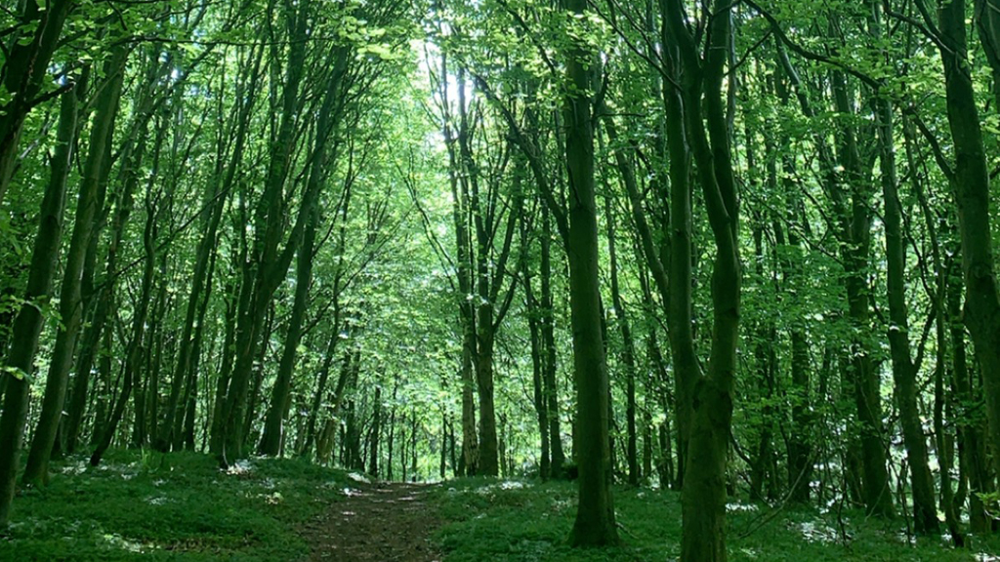
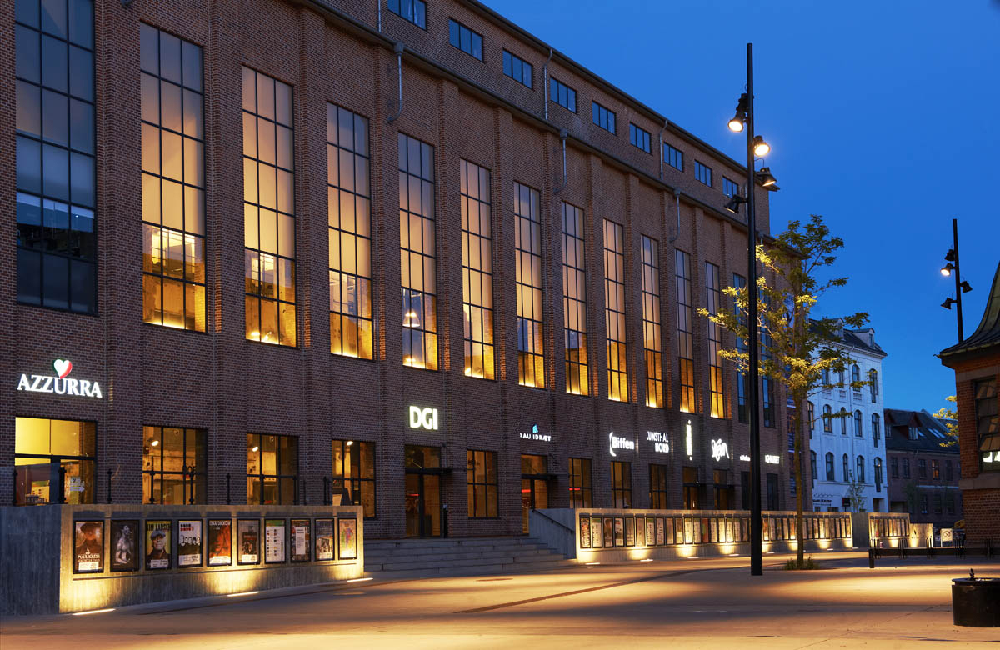
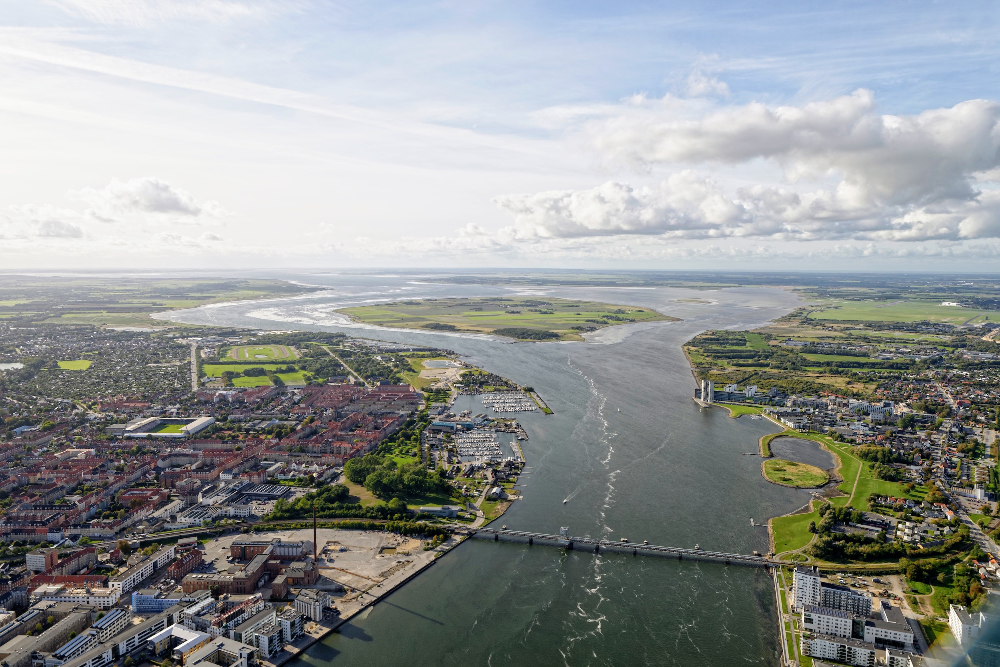
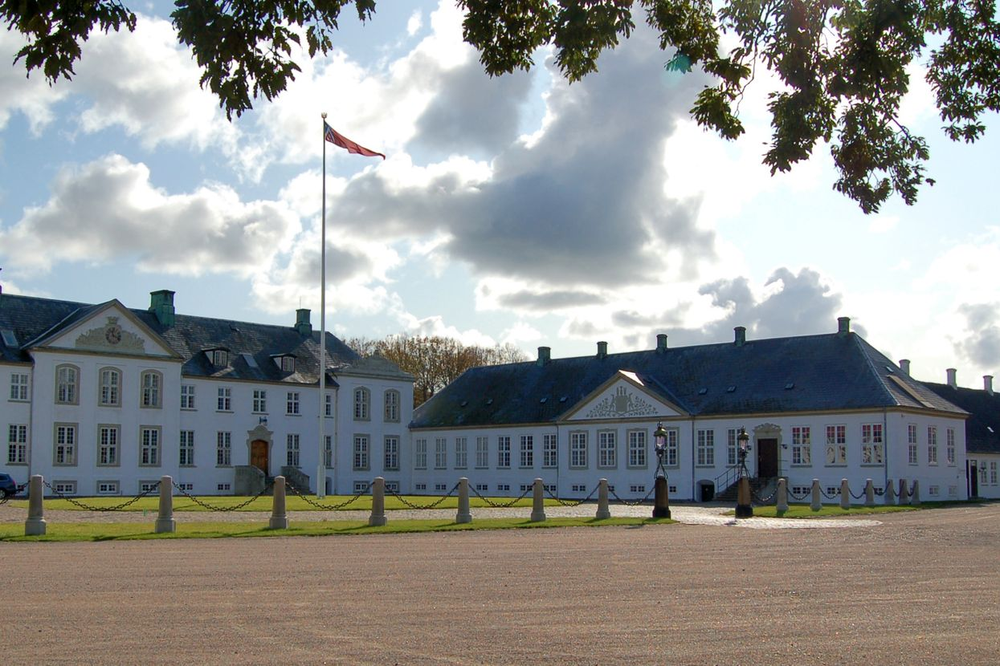
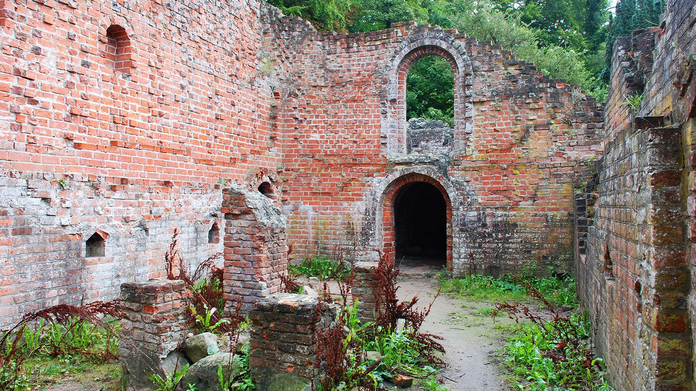
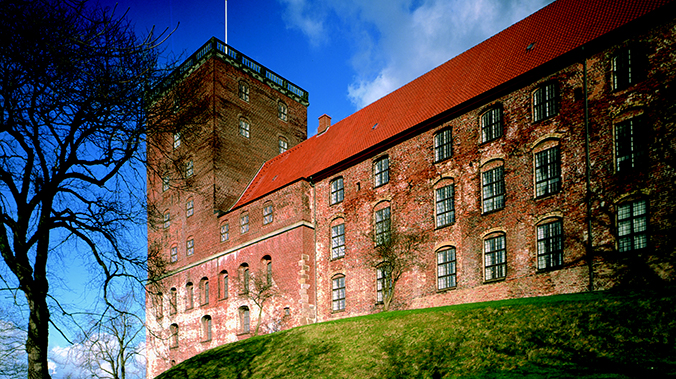
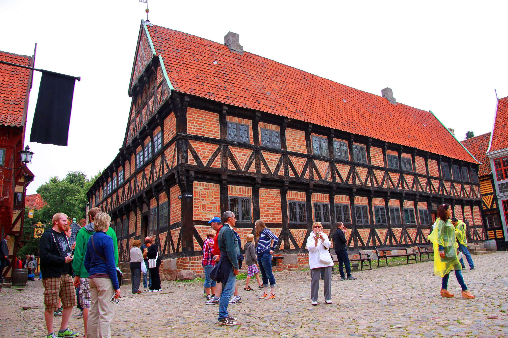
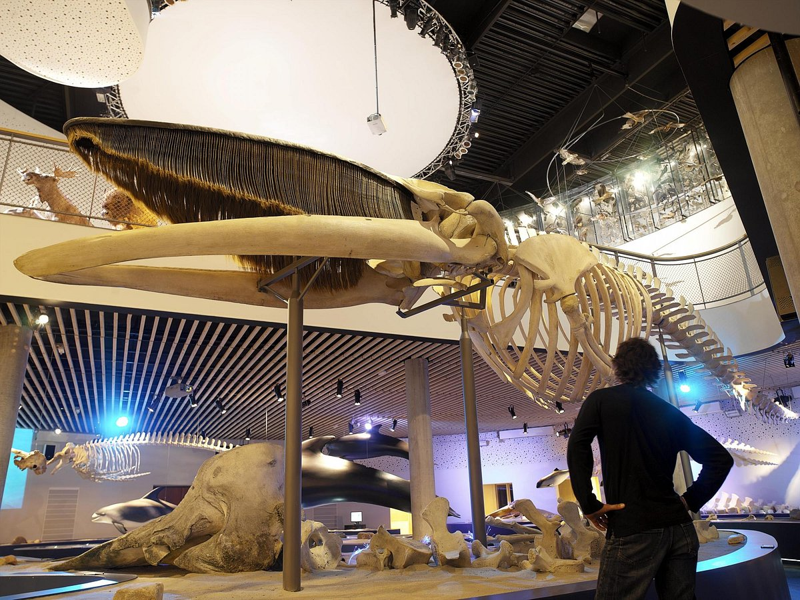
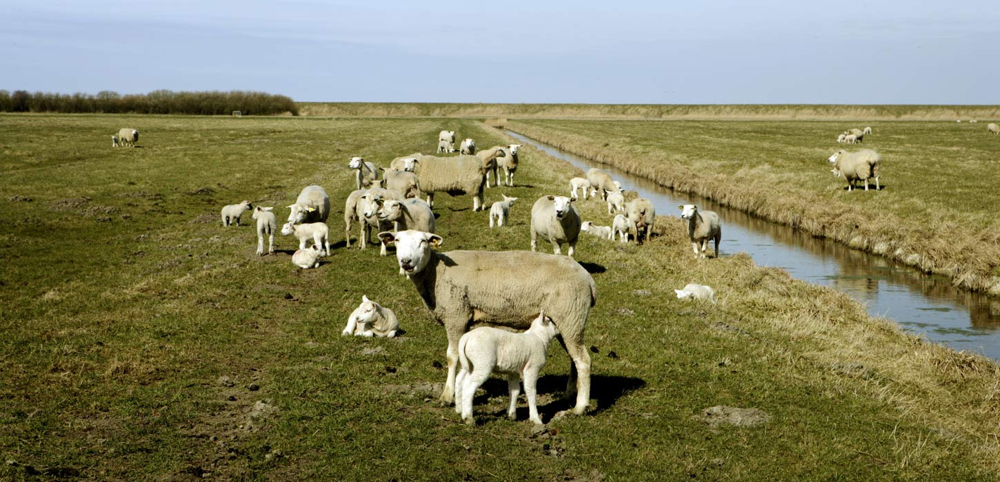
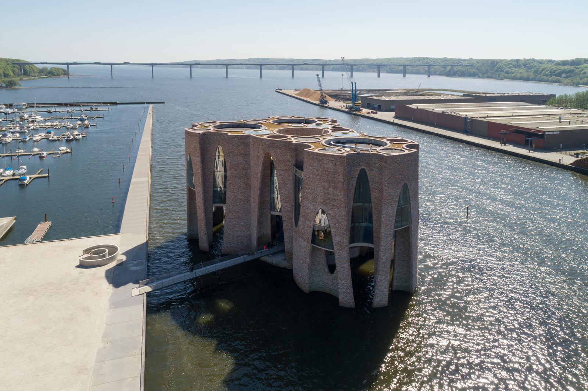

Copenhagen
Copenhagen, Danish København, capital and largest city of Denmark.
It is located on the islands of Zealand (Sjælland) and Amager, at the southern end of The Sound (Øresund).
A small village existed on the site of the present city by the early 10th century.
In 1167 Bishop Absalon of Roskilde built a castle on an islet off the coast and fortified the town with ramparts
and a moat. In 1445 Copenhagen was made the capital of Denmark and the residence of the royal family.
In the civil and religious conflicts of the Protestant Reformation, the town was often sacked.
During the late 16th century Copenhagen’s trade began to flourish, and the city itself expanded.
Among the new buildings erected were the Børsen (Exchange), the Holmens Church, Trinitatis Church,
with the adjacent famous Round Tower, and the castle of Rosenborg (now the museum of the royal family).
During the wars with Sweden (1658–60) Copenhagen was besieged for two years.
Fires in 1728 and 1795 destroyed many houses and buildings, and in 1807 the city was bombarded by the British.
The ramparts were pulled down in 1856. Since then the city has expanded still further and incorporated many
of the adjacent districts.
Recommended Attractions
Tivoli Gardens

Walking from Town Hall Square and crossing H.C. Andersens Boulevard brings you to the inspiration behind the
Disney theme parks: the famous Tivoli amusement park and pleasure gardens dating from 1843.
It's impossible to miss the grand entrance at Vesterbrogade.
Here, visitors are welcomed through a dramatic archway flanked by columns.
No matter what time of year you visit, Tivoli feels festive.
Inside the gardens, you'll wind your way through a village complete with cute shops and a lake adorned
by well lit trees that are mirrored serenely in the water. That's likely the only serenity you'll
find in this miniature theme park, which brings out the kid in every visitor.
Here, you'll also find more than 20 attractions, including a roller coaster; roundabouts; halls of mirrors;
pantomime, puppet, and open-air theaters; a wealth of restaurants and cafés; flower gardens;
and a Moorish-styled concert hall, which is particularly pleasing when lit up at night.
National Museum of Denmark

An easy 10-minute walk from Tivoli along Vestergade brings you to the National Museum (Nationalmuseet),
a must-see attraction for anyone with an interest in Danish history and culture.
Some impressive runic stones are on display here, and the Danish history collection includes a sun chariot
(cult object in the form of a cart) that is more than 2,000 years old, Romanesque and Gothic church fittings,
Danish porcelain and silver, and collections of antiquities and coins.
The ethnographical collection, including items from Greenland, gives an excellent impression of life among the
Eskimos. Inside, you'll also find collections from other interesting areas including, Asia, Africa and Oceania,
as well as the culture of the Indians.
Den Bla Planet

Although you won't likely notice this from the ground, Den Bla Planet (a.k.a. the National Aquarium Denmark)
was built to resemble a whirlpool. Think that's cool? Head inside where the aquarium's wow factor is even more
impressive!
The largest aquarium in Northern Europe, Den Bla Planet is one of the best attractions in Copenhagen.
The building's aluminum-covered walls evoke rolling ocean waves while the aquarium's inner pathways flow like
tributaries from the central core through eight sections.
These paths are lined by close to 50 aquariums and installations that house everything from eagle rays to turtles
to hammerhead sharks to seahorses to moray eels to alligators. There is no shortage of creatures to see here.
Whether you're hoping to spot ocean animals up close or are interested in the marine life that call tropical
rivers and lakes home, you're sure to find something inspiring in this venue. Watch the otters play,
touch a creature in the tropical touch pool, or visit the café for a treat.
Strøget Shopping Mile

A stroll of around five minutes from Christiansborg takes you to the bustling shopping area of Strøget where
you'll find a wealth of boutiques, cafés, and restaurants.
Strøget, a nickname from the 1800s, consists of several roads crisscrossing one another,
beginning at Town Hall Square (Rådhuspladsen) and ending at Kongens Nytorv.
Some adjoining streets on the north have also been pedestrianized.
International brand-name stores such as Max Mara, Prada, Louis Vuitton, and Hermès tend to be at the end of
the street facing the direction of Kongens Nytorv. Follow Strøget towards City Hall
Square for more affordable shopping at H&M, Weekday, and Zara.
Frederiksberg
Frederiksberg is a part of the Capital Region of Denmark.
It is formally an independent municipality, Frederiksberg Municipality,
separate from Copenhagen Municipality, but both are a part of the City of Copenhagen.
It occupies an area of less than 9 km2 and had a population of 103,192 in 2015.
Frederiksberg is an enclave surrounded by Copenhagen Municipality.
Some sources ambiguously refer to Frederiksberg as a quarter or neighbourhood of Copenhagen,
being one of the four municipalities that constitute the City of Copenhagen (the other three being Copenhagen,
Tårnby and Dragør).[5] However, Frederiksberg has its own mayor and municipal council, and is fiercely independent.
Recommended Attractions
Cisternerne

Forget everything about traditional art museums and exhibition spaces.
Nowhere else in Denmark does art become one with the physical surroundings to such an extent as here!
Today Cisternerne is a subterranean art space, where you can withdraw from daily life, where time stands still,
and where the mobile signal doesn’t reach. When the cold climate in Cisternerne embraces you, you are not simply
looking at art – you are completely immersed in art.
The old reservoir is sparsely illuminated, and the atmosphere evokes fascination and enchantment in both children
and adults. Every year we invite an internationally recognized artist or architect to create an exhibition
particularly to this underground space – an exhibition in large scale that interacts with and emphasizes the
unique architecture, climate, atmosphere and history of Cisternerne.
The art projects that unfold in Cisternerne are site-specific and cannot be built or rebuilt any other place
in the world.
Søndermarken

Between Valby and Copenhagen you find Søndermarken – one of Frederiksberg’s many parks offering space and
beautiful nature.
Here you find wild plants, long meadow-like grass and even owls in the old trees.
The locals use Søndermarken for jogging, walking the dog or just strolling in the hilly and forest filled
landscape. You can also visit the playground with your children or experience the cisterns that used to be water
basins supplying clean water to the Copenhageners.
The Danish Music Museum

The Danish Music Museum has existed since 1898, making it one of the oldest museums of musical history in the world.
It features a comprehensive collection of European, Asian, South American and African musical instruments dating
from the 16th to the 20th centuries as well as a library, archives and a comprehensive collection of visual art.
In the new surroundings, the Danish Music museum will have more room for both exhibitions,
the library and educational activities.
The museum also launches its new initiative “The Sound Room”, where children of all ages can have a try at
playing everything from the harp and the kettledrum to the electrical guitar and the xylophone.
When you visit the many exhibitions, you may come across quaint instruments such as the 'amoeba-shaped violin,
'the giraffe piano', and the 'sausage bassoon'.
Gentofte
Gentofte is a district of Gentofte Municipality in the northern suburbs of Copenhagen, Denmark.
Major landmarks include Gentofte Town Hall, Gentofte Hospital and Gentofte Church.
Gentofte Lake with surrounding parkland and nature reserves form the most important greenspace.
Gentofte is roughly bounded by Lyngbyvej to the west, the S-train line to Hillerød to the northeast,
Bernstorffsvej to the east and Kildegårdsvej to the south. The southern border with Hellerup is, however,
not clearly defined.Gentofte, as defined by Gentofte Municipality, covers circa 335 hectares or 13% of the
municipality's total. On 1 January 2012 the district had 8,289 residents,
equaling 11% of the total population of Gentofte Municipality.
Recommended Attractions
Ordrupgaard

If your're interested in arts, then Ordrupgaard is the place for you.Odrupgaard is an exclusive
art museum with a collection that includes names such as Monet, Gauguin, Matisse, Renoir and Hammershoi.
Initially, the museum building served as a manor house. You can still sense the atmosphere throughout the
old rooms and the park. Additionally, you can experience temporary exhibitions and (on weekends) visit the
renowned Danish architect Finn Juhl's house which is a part of the museum. The sculptural extensional adjacent
building is designed by the internationally acclaimed architect Zaha Hadid.
Charlottenlund Fort

Charlottenlund Fort isn’t just an old military fort. It is also an exciting and beautiful park with a popular
swimming beach and bathhouse. It lies between Charlottenlund Forest and the Sound, and its open green spaces
provide the setting for a host of leisure activities. It affords opportunities for sunbathing, play, ball games,
picnics and a dip in the waves of the Sound.
The fort was built below Charlottenlund Palace as part of the fortifications around Copenhagen
in the years 1886-88. In 1910 it was converted into a regular søfort and was one of the forts designed to
protect Copenhagen from attacks from the sea.
Today, both the fort and its surroundings at the beach park is a popular recreation area,
which has been used for the organization of concerts. Inside the fort area behind the ramparts is a campground,
and the violence on the Øresund catering establishment.
Charlottenlund Travbane

If you're into some traditional horse racing, then the Charlottenlund Travbane is for you. Charlottenlund Travbane
is a harness racing track in the town of Charlottenlund in the Capital Region of Denmark.
The racetrack, nicknamed Lunden, was established in 1891 by the Danish Trotting Club (Det Danske Travselskab).
The annual major events at Charlottenlund Racetrack are the Danish Trotting Derby and international Copenhagen Cup.
Helsingør
Less than 46 kilometers from the capital city of Copenhagen, Helsingor is primarily a busy ferry port.
Countless Swedes make the trip across the short stretch of water from Helsingborg for cheap supplies and
simply to enjoy a day out.
Yet, this unassuming town has plenty of things to do. One of the reasons it's such a popular place to visit is
its Shakespearean past. For this is Elsinore, home to Hamlet's castle, the mighty Kronborg.
The medieval quarter is particularly pleasant place to visit on foot and has some fascinating buildings,
such as the beautifully preserved Carmelite Monastery (Karmeliterklostret) attached to St. Mary's Church
(Sankt Mariæ Kirke). Throughout the streets of the old town, you'll find boutiques, atmospheric cafés,
and charming restaurants.
Recommended Attractions
Kronborg Castle

A UNESCO World Heritage Site, Kronborg Castle is the setting of Shakespeare's Hamlet and the top tourist attraction
in Helsingor. In the northeast of town, on a peninsula in the Øresund (the sound on which Helsingor sits),
the towering castle is plainly visible from afar.
Originally, a fortress built around 1420 by Eric of Pomerania stood here. A new castle, a four-winged building
with an enclosed inner courtyard, was built between 1574 and 1584 under Frederick II. After a catastrophic fire
in 1629, King Christian IV had the castle rebuilt between 1635 and 1640.#
For more than 100 years, the structure served as a garrison and, in 1924, it was renovated. The Castle Chapel
lies in the South Wing with a splendid Renaissance interior and woodcarvings from Germany.
The North Wing contains the great Ballroom or Knights' Hall. Superb tapestries are on display in the West Wing.
National Maritime Museum of Denmark

The National Maritime Museum is one of the top places to explore Denmark's seafaring legacy.
Set underground in the old dry docks of the revamped former shipyard area next to Kronborg Castle,
and designed by renowned Danish architects BIG (Bjarke Ingels Group), the collections are dedicated to the
country's rich maritime history.
The informative and dramatic exhibits include relics from Denmark's conquests in Greenland, India,
the West Indies, and West Africa. The area is also the site of the Culture Yard; a theater, concert venue,
library, and restaurant housed in a cutting-edge glass and steel structure created from old wharf buildings.
Danish Museum of Science and Technology

Just three kilometers from the town center, and in a fittingly industrialised zone, you'll find this privately
funded museum dedicated to Denmark's impressive technological achievements. Stretching over some 8,000 meters,
the museum is housed in a former iron foundry dating from the 1960s.
There's a comprehensive collection of steam engines, various inventions, electrical appliances, bicycles,
vintage cars, and aeroplanes. Alongside all this, the museum is home to a functioning pewter workshop and
exhibits dedicated to the discovery of electromagnetism and the "Telegraphone," the forefather of modern tape
recording.
The aviation section, with more than 30 flying machines, including one that's claimed to be the first ever to
take flight in Europe (sadly unrecorded), is particularly interesting.
St. Olaf's Church

Built in 1559, the striking red brick Gothic cathedral of St. Olaf's (Sankt Olai) nestles in the heart of town.
Named after the Norwegian King Olav, who was canonised, the church is adorned with various depictions of him.
The building, originally a church, but consecrated as a cathedral in 1961, was completed in 1559, however its
history dates back to the 13th century. Remains of ancient decorations adorning the old Romanesque chapel that
once stood here can still be seen in the north wall of the nave. Other points of interest include Dutch alabaster
altarpieces, the beautifully carved pulpit, and a number of frescoes.
Hillerød
Hillerød is a Danish town with a population of 35,357 (1 January 2022) located in the centre of North Zealand
approximately 30 km to the north of Copenhagen, Denmark. Hillerød is the administrative centre of
Hillerød Municipality and also the administrative seat of Region Hovedstaden (Capital Region of Denmark),
one of the five regions in Denmark.
It is most known for its large Renaissance castle, Frederiksborg Castle,
now home to the Museum of National History. Hillerød station is the terminus of one of the radials of the S-train
network as well as several local railway lines. The town is surrounded by the former royal forests of Gribskov
to the north and Store Dyrehave to the south.
Recommended Attractions
Frederiksborg Castle

Frederiksborg Castle is beautifully situated on three small islets in the Castle Lake in Hillerød.
Within the castle’s walls there are major cultural attractions for the whole family, while the highly picturesque
setting is perfect for peaceful walks in the gardens and boat trips.
Frederiksborg Castle was built by King Christian IV in the early decades of the 17th century and is the largest
Renaissance complex in the Nordic region. The aim of the building was to show off and enhance Christian IV’s
status as a powerful European monarch. Accordingly the castle is richly adorned with symbolic and decorative
elements: for example, the impressive Neptune Fountain and the Marble Gallery of the King’s Wing.
Since 1878 Frederiksborg Castle has housed The Museum of National History, which presents 500 years of Danish
history with a collection of portraits, history paintings, furniture and applied art. The Museum was established
by the founder of Carlsberg, brewer J. C. Jacobsen, and ever since has been an independent department of the
Carlsberg Foundation.
Æbelholt Klostermuseum

Æbelholty Klostermuseum is just outside Hillerød. See the ruins of the largest Scandinavian Augustine monastery.
Only a few ruins are left of the once extensive building complex.
Imagine the Abby in its heyday during the Middle Ages. Travelers and the poor could find a meal here.
The Abby also functioned as a hospital. At the museum, you can see some of the 800 skeletons found in
archaeological digs around the Abby. Meet the young girl who died in childbirth.
The dead tells a story of disease, life and death in the middle ages.
Hillerød Town Museum

Hillerød Town Museum is an atmospheric and cosy museum which tells the story of Hillerød throughout 500 years:
from medieval village to royal borough and until today.
In Time Street on the first floor, you can experience a journey through the 19th and 20th centuries.
Look into the recreated shops and workshops that have existed in Hillerød, see the old classroom, and enjoy
everyday situations and snapshots from the past.
In the basement lies the working Graphic Museum, where former printers and typesetters passionately
keep the old craft alive. Watch them work with the machines Wednesdays from 11 am to 2 pm.
In the basement lies the working Graphic Museum, where former printers and typesetters passionately keep the old
craft alive. Watch them work with the machines Wednesdays from 11 am to 2 pm.
Århus
Denmark's second largest city, Aarhus (or Århus) lies on the east coast of Jutland, where the river Aarhus Å flows
into the picturesque bay of the same name. First mentioned in 928 CE as the seat of a Bishop, it received its
municipal charter in 1441.
From the Middle Ages onwards, it served as an important commercial, seafaring, and fishing center, a tradition that
lives on due to the area's popularity among sports anglers. The wealth generated by merchants during the city's
early heyday is clear today in the many well-preserved Renaissance buildings you'll see as you explore its many
tourist attractions.
To find evidence of an even earlier era, stroll through Klostergade, Volden, and Borggade in the Latin Quarter.
This interesting neighborhood replaced the old Viking fortifications in the late 14th century. But this quarter
is far from frozen in time. Today, it's a lively enclave, with boutiques, cafés, and restaurants lining its narrow
stone-paved streets.
An important cultural center with an outstanding fine arts museum, Aarhus is also well known for its vibrant music
scene. Frequent concerts and festivals embrace everything from folk, jazz, rock, and pop, to chamber music and
operatic performances held in historic venues and churches.
Recommended Attractions
Den Gamle By

Den Gamle By, or "The Old Town," is a fascinating open-air museum consisting of more than 75 historic buildings
collected from across Denmark. Each of them were dismantled and reassembled in Aarhus for preservation.
Dating from the 16th to the early 20th century, this remarkable collection has been assembled as if it really was
an authentic "old town." The effect is further enhanced by the fact these superb old houses, shops, workshops,
and windmills still function just as they did in the past and serve as a time capsule preserving a bygone era.
Highlights of a visit include seeing the former Burgomaster's house from 1597, a remarkably well-preserved
building that is home to a fine collection of furniture. Also notable are the merchant's house, a stilt-house,
a two-storied stone house, and a storehouse. The largest building is the majestic Coin Master's Mansion,
a newer "old" addition erected on the site in 2009.
A toy museum, textile museum, and historical musical collection are also worth seeing. So, too, are the bicycle
museum; the apothecary's shop, complete with healing herbs; and the workshops once belonging to candlemakers,
coopers, and shoemakers. The museum also holds special exhibitions of historical costumes.
Five restaurants and cafés are located here, some serving traditional hearty foods. English language guided
tours by costumed guides are also available.
ARoS Aarhus Art Museum

The ARoS Aarhus Art Museum (ARoS Aarhus Kunstmuseum) is one of the largest art museums in Europe. Housed in an
impressive 10-story building that is itself a work of art, the museum's most remarkable architectural work of art
is Your Rainbow panorama.
This remarkable circular walkway is surrounded by glass in a spectrum of colors, created by Danish-Icelandic artist,
Olafur Eliasson. Mounted on columns 3.5 meters above the roof, the walkway is 150 meters long and three meters
wide. As you walk around it, you'll get views of the city and bay in rainbow colors. You can access Your Rainbow
through the 310-square-meter Roof Pavilion.
Highlights of the Kunstmuseum collections include artwork from the Danish Golden Age (1770 to 1900),
Danish Modernism (1900 to the 1960s), and contemporary art. Works span all genres and mediums, including
sculpture and installations.
Afterwards, stick around for a little sustenance at the on-site café or restaurant. You can also take in a show,
enjoy a lecture or workshop, or join an English language guided tour.
Moesgård Museum

A short drive south of Aarhus is the superb Moesgård Museum, or MOMU. Built on the grounds of the historic
Moesgård manor house, where the original museum was housed, this well-designed attraction opened in the autumn of
2014 and offers a comprehensive account of Denmark's history from the Stone Age right up to Viking times.
A particularly popular attraction is the Grauballe Man (Grauballemann), a body dating back more than 2,000 years
that was found perfectly preserved in a nearby bog. A café and gift shop are also located on the premises.
English language guided tours are available.
In the open-air section of the museum is the fun Prehistoric Trail (Oldtidssti). This fun trail meanders through
the woods and fields of the estate, passing replicas of prehistoric houses and burial mounds.
Aarhus Cathedral

The picturesque inner city of Aarhus consists of a semi-circle enclosed by a ring road (Ringgade).
At its heart lies the Great Market (Store Torv) in which stands Aarhus Cathedral (Sankt Clemens Kirke)
dedicated to St. Clement.
While the original structure was begun in the 12th century, the current church dates largely from the early 1500s.
Some Romanesque features can still be found in the external walls, and the chapels on the east side of the
transepts also date from this time. The present façade, with its single tower and anchor motif, dates from the
same period.
Highlights of the cathedral's bright interior include the winged altar from 1497 with its rich array of figures.
Also worth seeing are the beautifully carved 16th-century pulpit, two organs, and a font. The vault paintings
date from the 15th century and portray St. Clement as the patron saint of the church and Christ sitting in judgment.
English language guided tours can be arranged with advance notice, and are available during and outside of
normal visitor hours.
Herning
Herning is a Danish city in the Central Denmark Region of the Jutland peninsula. It is the main town and the
administrative seat of Herning Municipality. Herning has a population of 50,565 (1 January 2022)
including the suburbs of Tjørring, Snejbjerg, Lind, Birk, Hammerum and Gjellerup, making Herning the 11th most
populous urban area in Denmark.
Herning was established at the beginning of the 1790s, during the period of heath reclamation, as a
commercial centre providing goods and services to the farmers in the area. A textile industry later developed in
and around the town. This industry was once Herning's principal economic activity. Today, the town has a more
diversified industrial base. Herning became a market town in 1913. Herning has twice been awarded the title of
Danish City of the Year.
Recommended Attractions
HEART Herning Museum of Contemporary Art

The HEART Herning Museum of Contemporary Art is an art center located in the city of Herning, in the Jutland peninsula, Central Denmark.
The museum, founded in 1977, is housed since 2009 in an iconic 60,000 square-foot / 5,600 square-meter building
designed by acclaimed American architect Steven Holl. The museum was designed by Holl as a fluid-shaped
single-story building with reflective pools positioned in front of its south side.
The architect was inspired by the presence in the site of a 1960 circular construction that currently
houses part of the art collection of the HEART and once was a shirt factory. Therefore, Holl designed
a new building whose shape “resembles a collection of shirtsleeves viewed from above”.
The museum’s collection is focused on modern and contemporary Danish and international art, from the 1930s onward –
with a special focus on Italian post-war art and Arte Povera, and on concrete and constructive art –
including works by Piero Manzoni, Lucio Fontana, Mario Merz, Joseph Beuys, Jannis Kounellis, Ole Schwalbe,
Victor Vasarely, Ingvar Cronhamma, and Dennis Oppenheim, among others.
Carl-Henning Pedersen & Else Alfelts Museum

Carl-Henning Pedersen & Else Alfelts Museum is an artist museum built around a unique collection of the couple's
works. Carl-Henning Pedersen donated several thousand of his and his wife's pictures to the city of Herning,
which established the museum in 1976. The museum holds a total of more than 6000 works by the two artists.
The Carl-Henning Pedersen & Else Alfelt Museum was inaugurated in 1976 and originally consisted of a circular
exhibition building. In 1993, the museum was expanded with a three-sided pyramid, and in 2015, the former shirt
factory Angligården was connected to the other museum buildings via two new large exhibition halls underground.
On Saturday 25 June 2022, a large part of Prince Henrik's popular sculpture collection was handed over to the
museum. Queen Margrethe II visited the museum that day. For a number of years, the Queen has been depositing a
number of works from her private collection of the Prince's sculptures.
Step into the magical worlds and be ready to wander around among mythical animals and powerful creatures in a
vibrating universe.
Søby Brunkulslejer

Søby Brunkulslejer (brown coal field) is situated by Søby in Kølkær parish aprox. 15 km south from Herning.
The brown coal fields cover a listed area at around 1000 hectare and it is estimated that there has been produced
around 50 million cubic metres of brown coal from the period 1940 - 1970.
Today, the area is a hilly nature area with lots of small lakes, but some of the area is dangerous to go to since
there are risks of slides.
North of Søby lies Søby sø which is not from the brown coal-digging but a natural heath lake.
In 1939, the production in the fields started out little by little. At first it was by hand, shovel, wheelbarrow,
spade and horse carriage. Later the hand tools were supplemented with excavators and conveyer belts.
Quickly, a town developed around the fields - the houses being small sheds and barracks, railway carriages and
worn-out coaches. The area was called The Jutlandic Klondike.
Visit the fields and make your way around the small houses and experience how life as a brown coal-worker was.
Holstebro
Holstebro is the main town in Holstebro Municipality, Denmark. The town, bisected by Storåen
("The Large Creek") and has a population of 36,489 .
Holstebro has a large network of pedestrian walkways (gågader) in the town centre either side of the River Storå.
This area has a varied shopping environment, enhanced by outdoor sculptures and picturesque buildings,
including the town church and the Town Hall. The first sculpture purchased by Holstebro Municipality was
Alberto Giacometti's sculpture "Maren on vehicle" purchased in 1966.
Holstebro has a rich and varied cultural life. Between 1997 and 2009 it hosted the internationally recognized
ballet company Peter Schaufuss Ballet and the town still hosts the performance art theatre Odin Teatret.
Several museums, including the Holstebro Art Museum with its collection of Danish and international contemporary
art, and the Holstebro Museum can be found in the town.
The town holds an annual culture festival, the Holstebro Festive Week, in late summer. The Holstebro Hall,
rebuilt in 1966, houses a music theatre, the Holstebro Convention and Culture Center (1991) and provides space
for theatre presentations, concerts, exhibitions and conventions. More than 100 cultural events occur here
every year, and the hall is visited by more than 100,000 people annually.
Recommended Attractions
Flamingo Naturpark
Flamingo Nature Park is a beautiful nature park and have a unigue experience.
Small "rooms" and oasis spread out in the park make the perfect settings for an extraordinary picnic.
Bring out picnic basket and find your favourite spot to enjoy the park and the calm atmosphere.
The pavilion is the perfect backdrop if you want a different party, and here you can decorate and cover up in
many different ways. Around the building runs an outdoor terrace with exquisite views of the lakes.
The park boasts no less than 20 different kinds of water lilies in the many lakes and lagoons.
In the park you will also encounter the Lady of the Bog and the Statue of Liberty. You are welcome to enjoy your
packed lunch in the garden. You can sit outside in the cozy courtyard, where there is also a barbecue,
which you are welcome to use. It is also possible to eat your packed lunch indoors if it is not dry weather.
Flamingo Nature Park is handicap friendly in the sense that the paths are as far as possible in hard material,
which makes it possible to use a wheelchair around the garden.
Holstebro Kunstmuseum

Danish and international art from the 1930s until today alongside traditional non-western art.
Husby Klitplantage

Husby Klitplantage close to the North Sea consists of a hilly dune landscape covered by heath vegetation and dune
grass, which passes into pine and pine forest. Further inland grow beech and other deciduous trees.
In the plantation you can, among other things, experience crustaceans, roe deer, bird king, buzzard, tower falcon
and natravn.
The dune "Marens Maw" (Marens Mave) lies on the edge of the forest areas and the dune heath in the western part
of the plantation. The view of the wild North Sea, the quiet Nissum Fjord and Husby Klitplantage is fantastic.
The 'pot' in the plantation's west side is a characteristic dune formation - a so-called parabola dune.
Wind and weather have created the pot, where all sand is blown away down to the groundwater.
In the plantation there are two nature camp sites. In this unique plantation there is a popular swimming lake,
Skavemosen The lake is relatively shallow and suitable as a bathing lake - also for the smallest.
There are tables / benches and barbecue. The lake is a dug lake, where among other things live pike and perch.
There are a large number of marked hikes, - bike, riding and running routes in the area.
Horsens
Horsens is a Danish city in east Jutland. It is the site of the council of Horsens Municipality.
The city's population is 57,517 and the municipality's population is 87,736. The municipality is also a part of the
East Jutland metropolitan area, which has 1.2 million inhabitants.Horsens is best known for its culture and
entertainment events. Horsens New Theatre is a cultural centre which holds over 200 events annually.
It has managed to draw major names such as Bob Dylan, Madonna and The Rolling Stones. GeographyHorsens lies at the
end of Horsens Fjord in eastern Jutland. The city is surrounded by typical moraine landscape with low hills and
valleys created by glaciers during the last ice ages. Horsens is 50km south of Aarhus and 30km north of Vejle,
and approximately 200km from Copenhagen.HistoryIt is believed the name Horsens derives from the old Danish words
hors (horse) and næs (naze, headland). From the 12th century the name Horsenes is known.
The earliest traces of a city are remains of a pagan burial site and houses dating back to the 10th century.
In the 12th century, the kings Sweyn III and Valdemar I issued coins in the city. In the 13th century the city
got its own legal code
Recommended Attractions
Horsens Art Museum

With its impressive collection of contemporary Danish art by the greatest contemporary artists,
Horsens Art Museum will undoubtedly be a great experience – regardless of whether you love art or the world of art
is an undiscovered territory for you.
The beautiful and striking building housing Horsens Art Museum is located at the top of the park Caroline Amalie
Lund whose beauty draws you in.
The focal point of the museum is contemporary Danish art and its collection gives you an insight into what is
happening within Danish art. The collection includes works by major new Danish artists and has an experimental
character ranging from the beautiful to the grotesque and through-provoking. The works give rise to dialogue,
wonder and reflection.
So take your family and talk about art, beauty, life and society while touring the bright and welcoming galleries.
Bygholm Lake

Prepare yourself for a great nature experience. The beautiful and idyllic Bygholm Lake is located near the centre
of Horsens in connection to Bygholm Park. Go for a hike in wooded terrain along the shores of the lake,
all the way around. The area is perfect for hiking, running, MTB and other outdoor activities.
Bygholm Lake is an very popular excursion destination for the inhabitants of Horsens. Here you will encounter dog
walkers, runners, MTB riders and horseback riders, anglers and orienteerers. Along the lake is a
7.5-kilometre-long route that is perfect for hiking and running. Åbjerg Forest leads all the way down to the lake,
and here you will encounter many trails and routes that you can explore. Try for instance the trail around Bygholm
Lake, which consists of two marked routes that are 1.9 and 9.4 kilometres long respectively.
These trails lead visitors to the many historical sites on the route.
A trip to Bygholm Lake can be combined with a visit to the beautiful old manor park Bygholm Park,
which is connected to the lake. Here you have the opportunity to enjoy a good meal or an overnight stay at
Hotel Scandic Bygholm Park.
If you want to stay all the way down to the lake, then this is possible at Bygholm Lake Camping in exceptionally
beautiful surroundings. Here you can sleep in a tent or a caravan and there are also shelters on the campsite area.
Also make sure to visit the old passage grave Grønhøj, which is more than 5000 years old. The passage grave is
on the south side of the lake.
FÆNGSLET

With its successful combination of fascinating cultural history and great contemporary cultural experiences,
the old Horsens State Penitentiary attracts hundreds of thousands of people every year. Visit the popular museum,
participate in large and small events or try spending the night behind bars.
Do you need to put your own life into perspective? Then visit the Prison in Horsens and learn about and sense the
thought-provoking stories that unfolded here. Because the PRISON commands your attention.
For most people, life behind prison walls is an unknown, closed world. However, at Fussingsvej in Horsens,
hard work is undertaken every day to open it up, creating an energised and active atmosphere. You are invited
inside to gain a unique insight into prison life. And the minute you drive through the gates, you see it.
That everything is still where it was when it was Horsens State Penitentiary.
But the Prison in Horsens is more than rough walls, prison yards and cell blocks. It is a five-branch enterprise
comprising of a museum, conference venue, youth hostel, events and home to entrepreneurs as well as commercial
lettings. All branches work based on a mission to create experiences beyond the ordinary and to be a beacon in
Horsens that helps to make the city something special.
The Prison Museum lets you get really close to life behind bars. Listen to the stories of the prisoners and the
grim and fascinating stories from the more than 150-year history of the prison. See the incredible escape tunnel
of the famous escapee Carl August Lorentzen and visit the old cells where the lives of the inmates unfolded.
Randers
Randers is a city in Randers Municipality, Central Denmark Region on the Jutland
peninsula. It is Denmark's sixth-largest city, with a population of 62,802. Randers is the municipality's main
town and the site of its municipal council. By road it is 38.5 kilometres (23.9 mi) north of Aarhus, 43.8
kilometres (27.2 mi) east of Viborg, and 224 kilometres (139 mi) northwest of Copenhagen.
Randers became a thriving market town in medieval times, and many of its 15th-century half-timbered houses remain
today, as does St Martin's Church, also from that period. Trade by sea was facilitated through the Gudenå River,
entering Randers Fjord. During industrialization, Randers quickly became one of the most important industrial
towns in the country, but it saw itself outpaced by the cities of Aarhus and Aalborg at the beginning of the 20th
century. Most of the larger historic industries in Randers are gone today. From 1970, the population saw a decline
from a peak of 58,500 citizens, until a stabilization in the 1990s occurred, followed by a modest rise since then.
The main tourist attraction is Randers Tropical Zoo thanks to its artificial rainforest, the largest in Northern
Europe, its 350 varieties of plant and over 175 species of animals. The city's football team, Randers FC, play
their homes games at the AutoC Park Randers, and are in Denmark's first league, the Superligaen. The town is also
home to Randers rugby union club and Jutland RLFC, a rugby league team, as well as Randers Cimbria, a Basketligaen
team that took 2nd place in the 2013–2014 season.
Recommended Attractions
Memphis Mansion

Memphis Mansion in Randers is a tribute to Elvis Presley the King of Rock’n’Roll and to Conny Cash The Man In
Black - and the facade of the museum is identical to Graceland in Memphis.
The building houses an American Diner Highway 51, Elvis Museum, a souvenir shop and party rooms.
The museum is based on a large collection of things involving Elvis. The collection belongs to the owner of
Memphis Mansion, Henrik Knudsen. Randers is the only place outside the USA that has its own Elvis museum.
The building houses an American Diner Highway 51, Elvis Museum, a souvenir shop and party rooms. The museum is
based on a large collection of things involving Elvis. The collection belongs to the owner of Memphis Mansion,
Henrik Knudsen. Randers is the only place outside the USA that has its own Elvis museum.
Highway 51 Diner is All American - both in interior and food, that is made from recipies from the southern states.
It is an unique in Denmark - Elvis would eat here!
Entrance is free for children under 12 years, when accompanied by an adult.
Naturepark Randers Fjord

Naturpark Randers Fjord is among the largest nature reserves in Denmark, and this is where the fresh water meets
the salt water in the Kattegat. On the stretch from the centre of Randers to the outlet in the Kattegat,
the inlet’s ‘blue band’ displays the most stunning scenery with flowering salt meadow, large reed forests,
shallow tidal flats, and great vantage points.
Together with the fjord itself, the forests of reeds and beach meadows along the fjord are home to a rich bird
life, and the fjord also contains a great variety of fish species.
In several places in the area, tables and benches, shelters and bird watching towers can be found, which the
]guests in the area can freely use.
In two places in Naturpark Randers Fjord, you have the possibility of crossing the fjord by ferry.
The ferry sails across the fjord from Mellerup to Voer and at Udbyhøj. The Mellerup-Voer ferry service can boast
of being the oldest royally licensed ferry service in Denmark dating back to 1740 and is also the smallest ferry
in Denmark. Where Randers Fjord flows into Kattegat, you can take Denmark’s only cable-drawn ferry at Udbyhøj.
Høj Stene Burial Monument

Experience Høj Stene, one of the oldest burial monuments in Northern Europe dating back to the Iron Age.
This ancient monument is found near the banks of Gudenåen river and its historic barge puller towpath,
so you can easily combine your visit there with a scenic hiking or canoeing trip.
The stones in this rediscovered burial monument has been set in the shape of a ship and has been used for
performing a burial ritual for a person of power – perhaps a king or a queen? It so happens that gold was found
in the centre of the ship setting, and ornamentation on the gold discloses that the burial took place around the
year 600.
You will access Høj Stene by parking your car at Kongensbro Kro inn near Gudenåen river and then walk along the
river’s barge puller towpath – the monument will then appear on your right.
Silkeborg
Silkeborg is a Danish town with a population of 49,747. Silkeborg is the seat of Silkeborg City Council (with
92,024 inhabitants as of 2018).
Silkeborg is located in the middle of the Jutlandic peninsula, slightly west of the geographical centre of
Denmark. The city is situated on the Gudenå River in the hilly and lush landscape of Søhøjlandet,
surrounded by Denmark's largest forest district and a great number of lakes. Silkeborg is also known as
Denmark's outdoor capital. The lakes between Silkeborg and Ry that are linked by the Gudenå, are known
collectively as Silkeborgsøerne (the Silkeborg lakes).[3] The city is divided along an east–west axis by the
lake of Silkeborg Langsø, which at the eastern side of the city, flows into the Gudenå River.
Recommended Attractions
Museum Jorn

The Museum Jorn in Silkeborg is located in beautiful nature directly on the river Gudenåen.
The museum was founded by Asger Jorn (1914-1973), one of the most important Danish artists of the 20th century.
The museum houses Denmark's second largest art collection, which, in addition to Jorn's own works, also includes
prominent works by other important Danish and international artists of the 20th century - a total of over 30,000
objects by over 600 artists, including Per Kirkeby, Francis Picabia, Lucio Fontana, Pablo Picasso, Jean Arp,
Max Ernst, Jean Dubuffet, Pierre Alechinsky, Georg Baselitz, Andreas Slominski and Erwin Wurm.
Hjejlen

Come and experience scenic Silkeborg from the water, on the historic steamer Hjejlen. It's an experience for
the whole family, and will take you back in time.
Hjejlen is the world’s oldest original coal-fired paddle steamer still in operation. Daily throughout the summer,
Hjejlen and the other excursion boats in the Hjejle fleet sail from Silkeborg to Himmelbjerget and on to the small
station town of Laven.
The trip from Silkeborg to Himmelbjerget takes 1 hour and 15 minutes. Finally, you have the opportunity to
experience the scenic Silkeborg lakes on an evening trip on board Hjejlen or one of the other boats.
Skive
Skive is a town in Skive municipality in Region Midtjylland at the base of Salling Peninsula, a part of the larger
Jutland peninsula in northwest Denmark. It is the municipality's main town and the site of its municipal council.
The town of Skive is located at the mouth of the Karup River (Karup Å) and the Skive Fjord, part of the Limfjord.
Skive has a population of 20,190.
Recommended Attractions
Mønsted Limestone Caves

In Mønsted Limestone Caves there are more than 60 kilometres of underground paths. Some are as large as cathedrals
and others are so narrow that a grown man cannot walk through them upright. 2 kilometres of pathway are
electrically lit.
From the main path which leads straightinto the limestone mountain you can by means of a side path gain access to
a very old cave system. Further down the main path you reach “Nonbos Cave” where people worked in the years
around 1840.
From this cave you have access to the deepest paths which lead to two lakes. Over the largest lake a multi-media
show takes place every half hour, telling the history of the caves. The pictures and images are dramatically
projected on the cave walls and water surface.
Skive Art Museum

A museum of art and cultural history! The museum has a fine collection of Danish art from the mid-1800s until the
present day. Two special areas in the collection are the new realist art movement and expressive landscape painting.
The museum alternates between exhibitions featuring works from the museum’s own collection and special exhibitions.
This could involve art exhibitions or cultural-historical exhibitions, or themed exhibitions interlinking topics.
A large number of events are held at the museum during the year: presentations, guided tours, holiday activities
and much more.
Spøttrup Castle

Spøttrup Castle is from the beginning of the 16th century and looks like a real robber baron’s castle with its
moat, ramparts and high walls with embrasures.
The Castle Museum offers insight into the life of the people who lived, fought and worked at the castle through
the ages.
Viborg
Viborg, a city in central Jutland, Denmark, is the capital of both Viborg municipality and Region Midtjylland.
Viborg is also the seat of the Western High Court, the High Court for the
Jutland peninsula. Viborg Municipality is the second-largest Danish municipality, covering 3.3% of the country's
total land area.
Viborg is one of the oldest cities in Denmark, with Viking settlements dating back to the late 8th century.
Its central location gave the city great strategic importance, in political and religious matters, during the
Middle Ages. A motte-and-bailey-type castle was once located in the city. Viborg's name is a combination of two
Old Norse words: vé, meaning a holy place, and borg, meaning a fort, but the original name of the town was
Vvibiærgh, where -biærgh means hill.
Recommended Attractions
The Energy Museum

Get up close and personal with renewable energy. The Energy Museum tells the history of energy and the green
revolution. They do this with a particular focus on UN Global Goal No. 7: Clean Energy and Global Goal No. 12:
Responsible Consumption and Production.
The Museum connects past, present and future and is filled with stories that are linked across generations.
The Museum exhibitions are spread across 7 different buildings as well as the connecting park and forest. At the
Energy Museum, you’ll find plenty of space for unwinding or recharging.
The café offers delicious homemade dishes using local produce, enjoy your food in the cozy café or on the terrace
overlooking the River Gudenå.
The World Map "Verdenskortet"

Discover the whole world in miniature, with lakes, rivers, mountains and flags! Widespread as an atlas,
The World map lies at the shores of the lake with beautiful green open spaces...
There is a playground, activities and puzzles for the entire family. You can go sailing in the Pacific, try pony
riding or a horse-drawn carriage in the summer season, mini golf and much more.
There is shop, cafeteria and picnic area with a view of the whole world. The glass pavilion can be reserved for
groups.
Hærvejen

On your way along Hærvejen, you will pass through some of Jutland’s most spectacular landscape.
The rolling Dollerup Bakker, the heaths of Randbøl Hede and the springs around Gudenåen.
Furthermore, Hærvejen brings you past elements of Danish history. Jellingestenen, the grave of the Egtved Girl,
Hærulfstenen and many of the best preserved burial mounds and dolmens in the country.
Whether you prefer to walk or ride your bicycle, going down Hærvejen is a unique way of combining an active
holiday with wonderful nature experiences and the sense of being part of history. History and the tales that go
with it are literally at your feet.
Ålborg
Aalborg is Denmark's fourth largest town (behind Copenhagen, Aarhus, and Odense) with a population of 119,862
in the town proper and an urban population of 143,598. As of 1 July 2022, the Municipality of Aalborg had a
population of 221,082, making it the third most populous in the country after the municipalities of Copenhagen
and Aarhus. Eurostat and OECD have used a definition for the Metropolitan area of Aalborg
(referred to as a Functional urban area), which includes all municipalities in the Province of North Jutland
, with a total population of 594,323.
By road Aalborg is 64 kilometres (40 mi) southwest of Frederikshavn, and 118 kilometres (73 mi) north of Aarhus.
The distance to Copenhagen is 412 kilometres (256 mi) if travelling by road and not using ferries.
Recommended Attractions
Utzon Center

In the middle of Aalborg Waterfront, you will find the beautiful Utzon Center. A building created by the
world-renowned and award-winning architect Jørn Utzon in collaboration with his son Kim Utzon. The work was
completed in 2008 and was the last work by Jørn Utzon before his death the same year.
At the Utzon Center you can experience exciting exhibitions in beautiful surroundings. Here the architecture is
brought to life, and to a degree where all your senses can come into play. In other words, the Utzon Center
integrates the architecture with your body - exactly in the spirit in which Jørn Utzon created the center. The
exhibitions include the permanent 'Utzon Gallery', which guides you through Jørn Utzon's life and career, as well
as other changing exhibitions. In addition, the center also offers tours, lectures and events.
Nordkraft

Biffen (in Danish) is the resident, independent film theatre in Aalborg, and shows films, movies from festivals,
short films, short features, and silent movies in its 3 theatres in Nordkraft.
Kunsthal Nord (in Danish) is also worth a visit. KunstVærket, the regional centre for dissemination, education
and production of art in Northern Jutland, displays their works in Kunsthal Nord.
If you’re after a nice lunch or a delightful dinner, then visit Restaurant Azzurra (in Danish) in Nordkraft.
Aalborg Tower

As the Aalborg Tower is located on Skovbakken, the platform is 105 meters above sea level. From here, you can
enjoy the view with a snack or a drink from the bistro. To get into the Aalborg Tower, you have to ring the bell
which is placed on the tower, and an elevator is sent down. The elevator is the highest outdoor elevator of the
North of Europe and is an experience in itself.
The bistro has room for 50 guests, but don’t worry: there is view enough for everyone. The 360° panoramic view of
Aalborg from the top of the tower provides an opportunity to take a break far away from the hustle and bustle of
everyday life.
The Aalborg Tower was built in 1933 for Nordjysk Udstilling (Exhibition North Jutland), and because it was too
expensive to tear it down, Det Broderlige Skydeselskab bought it for only DKK 5,000. Even though it was built
many years ago, the tower is in tiptop condition. Thanks to a thorough renovation in 2005, Aalborgtårnet is ready
to serve its visitors for many years to come. For safety reasons, the tower is closed if the weather is too windy.
Lindholm Høje

Due to sand drift, the burial site was covered completely by sand in the year AD 1000, preserving the stone
markings and a newly-ploughed field, much to the delight of archaeologist and visitors at Lindholm Høje.
Because of its great historic value and captivating museum exhibitions, Lindholm Høje was prominently featured on
Culture Trip's list of 20 Unmissable Attractions in Denmark in 2017.
At Lindholm Høje, you will see one of Scandinavia’s best preserved Viking findings – dug out from a thick layer of
sand which has kept the secrets of Lindholm Høje for thousands of years.
Lindholm Høje exhibits burial sites from both the Germanic Iron Age and the Viking Age. A total of 682 graves and
150 stone ships have been found on the site. North of the burial site was a village where remains of houses,
fences and wells have been discovered.
The area was severely troubled by sand drift, and around the year 1000, the sand completely covered the burial
site, thereby preserving the stone circles as well as a freshly ploughed field, which can now be investigated by
archaeologists and visitors at Lindholm Høje. Many of the discovered prehistoric findings are displayed at the
Lindholm Høje Museum.
Frederikshavn
Frederikshavn (Danish pronunciation: [fʁeðʁeksˈhɑwˀn]) is a Danish town in Frederikshavn municipality, Region
Nordjylland, on the northeast coast of the Jutland peninsula in northern Denmark. Its name translates to
"Frederik's harbor". It was originally named Fladstrand.
The town has a population of 22,672 (1 January 2022),[2] and is an important traffic portal with its ferry
connections to Gothenburg in Sweden. The town is well known for fishing and its fishing and industrial harbours.
Frederikshavn's oldest building, Fiskerklyngen, is originally from the mid-16th century, but the houses now there
are from 18th–19th centuries.
Recommended Attractions
The Coastal Museum of Bangsbo

The Coastal Museum of Bangsbo is situated in the beautiful manor of Bangsbo. The manor dates back to 1364 and it
lies in the heart of the idyllic Bangsbo area.
The primary exhibition at the manor shows the life around 1900 when the manor was owned by the bon vivant Johan
Knudsen. Due to Johan Knudsen the manor of Bangsbo became a hot spot for some of the most known Scandinavian
writers and artists around 1900. They formed a cultural and festive fellowship called the Circle of Bangsbo.
Thus a visit to Bangsbo provides a walk in the footsteps of the Danish writer Herman Bang and a fascinating
glimpse of the colourful life at the manor.
Apart from the exhibitions and collections in the manor house the museum also shows a fascinating exhibition about
the German occupation in Denmark and Northern Jutland. The exhibition provides a poignant look into various tales
of destiny and into the dangerous task that brave men and women took on in the Danish resistance.
Tordenskiold Festival

The festival is all about the Great Northern War in 1709-1720 and the heroic exploits of Danish naval officer
Peter Wessel Tordenskiold while he was stationed in Frederikshavn. It was started in 1998 and has since become
one of the most popular Scandinavian war memorial events which even attract historic groups from other countries
such as Norway and Sweden and draws in a crowd of about 30,000 visitors a year.
While the whole town seems to step back in time and participate in the event, the main activities are usually held
by the port and the Gunpowder Tower. During the days of the festival, a fleet of wooden ships and 18th century
vessels are re-created and are lined up along the harbor. There are live performances by actors in colorful
costumes who also parade around the town, lectures, musical shows, storytelling and demonstrations of musket
drills and sword fights and an exhibition of 18th century weapons, local crafts and many more. Moreover, there
are banquets and food stalls that offer traditional Danish cuisine. And every evening, spectators are treated to a
dazzling theatrical show of a sea battle in the harbor complete with lights and sounds and daredevil stunts.
Bangsbo Fort

Bangsbo Fort is located on a hilltop plateau on the southern outskirts of Frederikshavn, and the vantage point
82 metres above sea level provides a remarkable view out over Frederikshavn and the waters of the Kattegat. On
clear days, the it is possible to see all the way to both Skagen and Læsø.
The unimpeded view from this height was the reason why the occupying German forces chose to establish the first
fortified position here as early as in April 1940, and why they maintained a presence at the location until the
liberation of Denmark. Initially, it was the German Air Force that installed a mobile battery of 8.8 cm
anti-aircraft guns here, but soon after – in May 1940 – this was replaced by a stationary battery of anti-aircraft
guns of the same calibre operated by the German Navy. These guns were subsequently replaced on three occasions,
and at the end of the occupation the battery was armed with powerful 10.5 cm guns.
Hjørring
Hjørring is a town on the island of Vendsyssel-Thy at the top of the Jutland peninsula in northern Denmark. It is
the main town and the administrative seat of Hjørring Municipality in the North Jutland Region. The population is
25,644. It is also one of Denmark's oldest towns, having celebrated its 750th anniversary as a market town in 1993.
Hjørring is centrally located in a sparsely populated area and serves as an urban center for large parts of
especially the western and central Vendsyssel.
Hjørring has been changing in recent years, with new shops and franchises opening mainly outside the city center.
The most recent addition to Hjørring is the new city shopping centre, Metropol, which has led to a change in the
city centre as one of Hjørring's main streets, Østergade, has been closed to vehicular traffic and is now open
only for pedestrians and bicycles. Metropol which was inaugurated in March 2008, is located on Østergade and also
houses the city's public library.
Recommended Attractions
Vendsyssel Historical Museum

The Vendsyssel Historical Museum (VHM) is a regional museum, preserving and exhibiting the history of the region
of Vendsyssel in Denmark.
The museum works as an umbrella organization for a total of five departments and six exhibitions in Vendsyssel.
It was initiated in 1889 and attained recognition by the State of Denmark in 1959.
The exhibits holds artifacts and tells stories from the earliest Nordic Stone Age to modern times, rooted in finds
from the region of Vendsyssel. The museum and its collections was initiated by the first dentist in Hjørring
J. J. Lønborg Friis and his old preserved clinic can also be studied here. There is a museum shop and a café
at the complex.
Dana Cup

The Dana Cup, one of the world's largest football tournaments, takes place every year in the North Jutland town Hjørring in Denmark at the end of July. In 2008 there were over 25,000 participants (players, coaches and referees) from all around the world. It is advertised by the organisers as "the world's most international youth soccer tournament" since over the years, they claim it has had the largest number of participating countries of any international football tournament. First held in 1982, the tournament celebrated its 25th anniversary in 2006.
Nørresundby
Nørresundby is a city in Aalborg Municipality, north of Limfjorden, in Vendsyssel, in Denmark. The urban area has
a population of 23,718. It is located just north of Aalborg, which lies south of Limfjorden.
Statistically its own urban area since 2006, it is often still considered part of Aalborg, sometimes the name
Greater Aalborg (Stor-Aalborg) is used to describe the concept.
The city is connected to Aalborg by Limfjordsbroen, which is a road bridge, and an iron railway bridge, as well as
a motorway (E45) passing it to the east and running under the Limfjord.
Nørresundby is the site of the Lindholm Høje settlement and burial ground from the Germanic Iron Age and Viking
times. There is also a museum on the site.
Nørresundby has many sports clubs, most notably Lindholm IF, whose highest ranking football team as of the 2013–14
season play at the fourth-highest Danish level, Danmarksserien.
Recommended Attractions
Nørresundby Yacht Harbor

The water depth is 2 metres. The price per night is DKK 125, and the wireless internet is accessible in and around the clubhouse (find the code on the bulletin board in the kitchen). There is also a bus stop just around the corner.
Urtehaven - Herb Garden

The garden is handicap-friendly, with a focus on the visually handicapped in the constructed garden for sightless
people. It is possible to feel the presence of history in the garden and relax in areas with beautiful nature with
tables and benches for general use.
Besides this, ‘Urtehaven’ is one of the stops on ‘Snapseruten’ (The schnapps route). In connection with
‘Urtehaven’, one will also come across ‘Raschgaarden’, ‘Pibemagerhuset’ and ‘Brohuset' which are parts of ‘Sundby
Samlingerne’ that all are worth a visit. It is possible to get to ‘Urtehaven’ by car, bicycle, by bus number 13
towards Uttrup Nord or by foot.
Egholm

Egholm is placed in the middle of the Limfjord between Aalborg and Nørresundby. In just a few minutes, you can
sail from the western part of Aalborg over the Limfjord to the small island Egholm.
The island covers 605 hectares and the main part of the island is cultivated, however it is still possible to
enjoy the original and beautiful nature. Egholm Beach is a nice and very shallow beach and with the short ferry
route, the beach is not far from the centre of Aalborg. On the island, a network of paths have been established,
taking you to different vantage points where you can see the Limfjord and the nearby range of hills. You will get
the best experience on the island on foot or by bike.
Skagen
Skagen (Danish: [ˈskɛˀjn̩]) is Denmark's northernmost town, on the east coast of the Skagen Odde peninsula in the
far north of Jutland, part of Frederikshavn Municipality in Nordjylland, 41 kilometres (25 mi) north of
Frederikshavn and 108 kilometres (67 mi) northeast of Aalborg. The Port of Skagen is Denmark's main fishing port
and it also has a thriving tourist industry, attracting 2 million people annually.
The name was applied originally to the peninsula but it now also refers to the town. The settlement began during
the Middle Ages as a fishing village, renowned for its herring industry. Thanks to its seascapes, fishermen and
evening light, towards the end of the 19th century it became popular with a group of impressionist artists now
known as the Skagen Painters.
Recommended Attractions
Skagens Museum

Skagens Museum is an art museum in Skagen, Denmark, that exhibits an extensive collection of works by members of the colony of Skagen Painters who lived and worked in the area in the late 19th and early 20th centuries. Important artists include Marie and P. S. Krøyer, Anna and Michael Ancher, Laurits Tuxen, Viggo Johansen, and Holger Drachmann. The museum also hosts special exhibitions. Its facilities include a café in the Garden House, an old building which for a while served as home residence and studio of Anna and Michael Ancher.
Råbjerg Mile

Råbjerg Mile is Denmark’s largest moving dune, located at Bunken Klitplantage between Skagen and Frederikshavn. The Råbjerg mile contains 3.5 million m³ of sand and covers an area of approx. 1 km² and has a height of about 20 m, which brings the highest point of the mile 40 m above sea level. Since 1900 it has moved approx. 1750 m to the east, and today it moves at an average rate of 15 m per year, which means that in 100–200 years it will have covered the main road to Skagen. Trees and other things covered by the mile appear on the other side after about 40 years when the mile has passed.
Skagen Odde Nature Centre

The Skagen Odde Nature Centre, on the northern tip of Denmark's Jutland, is a
museum devoted to the effects of sand, water, wind and light. It was designed in 1989 by Jørn Utzon, the
celebrated architect behind the Sydney Opera House. Under the leadership of his son Jan, the centre was completed
in 2000.
The fascinating natural effect of the peninsula inspired the creation of the Nature Centre. Two seas, the Kattegat
and the Skagerrak meet at its tip. Then there is the Råbjerg Mile, a huge moving sand dune, Grenen with its sandy
beach celebrated by the Skagen Painters and the special light for which Skagen is so famous. The objective of the
centre is to allow visitors to see, hear and understand more about sand, water, wind and light. Each of the
pavilions presents one of these elements in a special atmosphere created by sound and light. There are special
activities for children.
The centre is open from 11 am to 4 pm from 1 May until the third week in October.
Thisted
Thisted is a town in the municipality of Thisted in the North Denmark Region of Denmark. It has a population of
13,461 and is located in Thy, in northwestern Jutland.
Thisted is located in northwestern Jutland, in the traditional district of Thy, which forms the western part of
the North Jutlandic Island. It is located on the northern shore of Thisted Bredning, a body of water between Thy
and the island of Mors, which itself is a part of the Limfjord, a sound separating the North Jutlandic Island from
the rest of the Jutland Peninsula. Thisted is located on three ridges, divided by two streams.
Recommended Attractions
Hanstholm Lighthouse

Hanstholm Lighthouse was built in 1842-43 near Hansted Church high on Hanstholmknuden. South of the lighthouse, a
residence for the lighthouse keeper was built, and the adjoining garden is a glorious, sheltered spot where
visitors can take a rest and eat the food they have brought with them.
The lighthouse is built to guide the ships in the dangerous journey around Hanstholmknuden, but it also serves as
the city's landmark that guides us forward and welcomes us. The lighthouse is 23 m high, and thanks to its high
location, the lighthouse emits light at a height of 65 m above sea level.
Hanstholm Lighthouse was Denmark's first rotating lens lighthouse, where the light was refracted by means of
lenses and collected in beams. In 1889, the lighthouse was no longer up to date, the lighthouse was raised and the
lens apparatus was electrified as the first in Denmark. A clockwork caused the device to rotate and flash, and the
lighthouse then, as now, showed three short flashes every 10 seconds.
The lighthouse at this time was the brightest in the whole world. The new technology was considerably more
extensive, and the building complex was expanded considerably, including engine rooms for the steam engines.
There was also a telegraph station and weather service attached to the lighthouse. The light from Hanstholm
Lighthouse was thus important for the passing ships, but the lighthouse also had other key functions for traffic
at sea.
Hanstholm Lighthouse is still in operation, but the operation is fully automated. There is access to the
lighthouse during the day; from here there are wide views of the northern part of the national park. After a
horough restoration of the lighthouse, Nationalpark Thy has an exhibition room at the lighthouse right next to
Hanstholm Tourist Information in the old machine hall.
Bulbjerg Bird Cliff and Bunker

Bulbjerg is the only cliff in Denmark and the area is often referred to as the shoulder of Jutland (due to how it
looks on a map). Besides bird cliffs on the island of Bornholm, this cliff is also the only bird cliff on the
mainland of Denmark. If the weather is clear you will have a view of Rubjerg Knude Lighthouse and Hanstholm from
the top of the cliff.
Besides giving an amazing view of the North Sea, the limestone cliff is home to many different bird species,
including kittiwakes, common puffins and northern fulmars.
Bulbjerg is constantly exposed to erosion by the violent waves of the North Sea, which engulfs large pieces of
limestone and spreads it out onto the shores next to Bulbjerg.
The bunker is designed as a free small museum and is open during the day. Here you can read about Bulbjerg's
geology, the bird mountain, the occupation period and the cultural history.
Cold Hawaii

The area and coastline between Agger and Hanstholm in Thy in North Jutland has been named Cold Hawaii. Cold Hawaii
achieved its name due to the wind conditions in the area are much like the one you will find in Hawaii.
You will find no less than 31 amazing surf spots.
Today, the area has practically developed into a small surfers’ colony, and the surfers now living in Klitmøller
have succeeded in creating an exciting environment that adds new life to the town and area. Every year, Klitmøller
sees a number of surf competitions. Since 2010, the village has hosted the international surfing championship Cold
Hawaii PWA World Cup with 32 of the best surfers in the world competing for the cup. During the years, the
interest in this competition has increased in Denmark and abroad. Since 2013, HRH Crown Prince Frederik has been
the patron of the PWA World Cup in Cold Hawaii.
The two reefs outside the coast to the south of the point of Ørhage contribute to making Klitmøller particularly
well-suited for different disciplines within the sport of surfing. The formation of huge waves facilitates wave-,
wind-, kite- and stand up paddle surfing. This is not solely for professionals, as a matter of fact, you can learn
the noble art of surfing if you visit the Cold Hawaii Surf Camp or WestWind Surf Shop Klitmøller.
Holbæk
Holbæk is a town in Denmark and the seat of Holbæk municipality with a population of 29,608 (1 January 2022).
It is located in the northwestern part of Region Sjælland, Denmark
Holbæk is located on Zealand, on the banks of Holbæk Fjord, an inlet of the larger Isefjord. Holbæk is a
commercial and industrial center for the surrounding area. By rail, Holbæk is served by Danske Statsbaner's line
from Roskilde to Kalundborg, which runs through the city. Vestsjællands Lokalbaner connects Holbæk by rail to
Nykøbing Sjælland. The city is a major hub for the Movia bus routes. Holbæk has an active commercial seaport that
serves as the harbor for the ferry to Orø (island). Near the harbor there is a substantial marina.
Recommended Attractions
Holbæk Art: Murals in Holbæk

Holbæk Art is a city full of murals.
Art can be lively, vibrant, scandalous, surprising and adventurous - but it is also often hidden away in museums,
where it can only be experienced by those who pay the entrance fee.
That's not what it's like in Holbæk. Thanks to the organisation "Holbæk Art" art has been taken into the streets,
where it can be experienced by everyone.
Here the walls of the buildings act as canvasses for artists' beautiful and occasionally surprising masterpieces.
In total 27 murals decorate the walls of the city and more are continuously added. Each mural has been created by
a different artist, including both international and national artists.
Thus, Holbæk Art has transformed Holbæk into an open art museum.
Holbæk Art aims to add new murals to the collection every two years.
Holbæk Museum

In Holbæk Museum you can explore historic buildings, the Danish history with the West Indies and the famous
Knabstrup ceramics.
Explore the Danish heritage in Holbæk Museum. In traditional colourful buidlings of Scandinavia, you will find
Holbæk Museum, where children and adults can explore the Danish Heritage of West Zealand. The museum is proud to
present an impressive collection of 250,000 artefacts, which can be explored in 12 historic buildings of which the
oldest is from 1660.
When you wander around in the shops of Copenhagen, with beautiful collections of Danish design, you might notice
the popular and beautiful ceramics from Knabstrup Ceramics. Knabstrup is in fact one of Holbæks neighbouring cities,
so therefore the museum boasts the largest collection of Knabstrup ceramics in Denmark.
CampOne Holbæk Fjord

3-star camping site with all modern facilities, views over the Isefjord, the Marina and the golf course. Quality
cabins with en-suite facilities, fully equipped kitchen and TV. Close to Holbæk’s many cultural activities.
The wellness House on Holbæk Fjord offers you hydrotherapy in whirlpool containing water of 100oF (38oC). Massage,
body wraps, facial masks, foot treatments, acupuncture, Craniosacral Therapy. Also available: massage chair,
solarium, Indoor Swimming Pool, whirlpool and sauna.
Kalundborg
Kalundborg is a Danish city with a population of 16,211, the main town of the municipality of the same name and
the site of its municipal council. It is situated on the northwestern coast of the largest Danish island, Zealand
(or Sjælland in Danish), on the opposite, eastern side of which lies the capital Copenhagen, 110 km (68 mi) away.
Kalundborg is famous as the location of a large broadcasting facility, the Kalundborg Transmitter. The city was
also home to the largest coal-fired power station in Denmark, the Asnæs Power Station, which started it's
transition to biomass in 2017.
Recommended Attractions
Church of Our Lady, Kalundborg

The church was probably built in the beginning of the 1200 by Esbern Snares daughter, Ingeborg.
The groundplan comes from Asia Minor and has the shape of a Greek Cross.
The position of the five towers is unique in the world.
The Gothic vestry was added about 1400. The centre tower, which fell down in 1827, was re-erected in 1870.
The font carries some motives of small palms that can also be seen on the base of the columns in Esbern's
childhood church at Fjenneslev.
Lerchenborg
Lerchenborg is a manor house located 4 km south of Kalundborg on the west coast of Zealand, Denmark. It is also one of the best example of Rococo architecture in Denmark, that can be seen in the town's outskirts.
Køge
Køge is a seaport on the coast of Køge Bugt (Bay of Køge) 39 km southwest of Copenhagen. It is the principal town
and seat of Køge Municipality, Region Sjælland, Denmark. In 2022, the urban area had a population of 38,304.
The natural harbour and strategic location have given Køge a long history as a market town. Today, that past is
evident in a well-preserved old town centre with many half-timbered houses.
Køge is located in the Copenhagen metropolitan area and is connected to downtown Copenhagen by the E line of the
S-train commuter rail system. Køge is also on the Copenhagen-Ringsted Line that was opened in June 2019. The new
line positioned Køge as a central hub in Denmark's transport system.
Recommended Attractions
Agricultural Museum Lundekrog

The Agricultural Museum Lundekrog exhibits a facinating collection of household, agriculturel and handicraft tools of the period 1840 - 1950.
Kjøge Mini Town

Visit Kjøge Mini-By where a historically accurate replica of the town of Kjøge AD 1865 is built on the scale of 1
to 10. You are welcome to follow the entire working process in our workshops and to have a chat with our competent
craftsmen.
We have a cefé serving coffee/tea, pastries, beer, wine, soft drinks ans ice cream. Booking minimum 10 days in
advance is required for larger groups wanting coffee/sandwiches etc.
Ejby Kirke

Ejby Church is an old medieval church, its Romanesque nave from c. 1150–1200 was extended to the east in the
Gothic period, and in the late Gothic period (c. 1500) three extensions were added, i.e. tower, vestry and porch.
The baptismal font dates from c. 1300. It was created in Gothland limestone and decorated with engraved figures of
apostles and saints.
The canopy type altarpiece was painted in 1596 with catechism tablets.The pulpit in auricular style dates from 1625.
The organ has 15 stops distributed on two manuals and a pedal and was built by Gunnar F. Husteds Orgelbyggeri in
1995. Of particular interest are the church's two tympana, i.e. reliefs that previously sat above the south and
north entrance to the church. They are now to be seen inside the church, carved into the wall just in front of
the organ. The south wall tympanum depicts Christ as Judge of the World, while the one on the north wall depicts
the hideous Lindworm.
Maribo is a town in Lolland Municipality in Region Sjælland on the island of Lolland in south Denmark. It was the
municipal seat of the former Maribo Municipality, until 1 January 2007, and then it became the seat of the current
Lolland Municipality.
The merchant town of Maribo is located centrally on Lolland. Its population is 5,722. It has, among other
facilities, a gymnasium (Secondary school), a public international school, an open-air museum and a cultural
heritage museum.
Recommended Attractions
Knuthenborg Safaripark

Knuthenborg Safaripark is a safari park on the island of Lolland in the southeast of Denmark. It is located 7 km
(on Rte 289) to the north of Maribo, near Bandholm. It is one of Lolland's major tourist attractions with over
250,000 visitors annually, and is the largest safari park in northern Europe.
It is also the largest natural playground for both children and adults in Denmark. Among others, it houses an
arboretum, aviaries, a drive-through safari park, a monkey forest (with baboons, tamarins and lemurs) and a tiger
enclosure. Knuthenborg covers a total of 660 hectares (1,600 acres), including the 400-hectare (990-acre)
Safaripark.[1] The park is iewable on Google Street View.
Maribo Open-Air Museum

Maribo Open-Air Museum is a museum located on the western outskirts of Maribo on
the Danish island of Lolland. It is located 1 kilometre (0.62 mi) from Torvet, to the west of the Maribo Sø
Camping site and oak woodland, near the northern banks of Søndersø Lake. It is the third oldest open-air
museum in Denmark, and is in the backdrop of the Maribo Lakes Nature Park. Located on Meinckesvej, Maribo, the
museum is open to visitors from 1 May to 30 September every day except Monday from 10 am to 4 pm.
Opened in 1927, the museum provides a picture of village life in Lolland and Falster in the 19th century.
The museum consists of 13 individual houses from the 17th to the 20th centuries, each illustrating how rustic
people of different professions lived and worked in former times, and thus expose to the public the ancient
building traditions.
The ancient houses are from Lolland and Falster, and also 20 farms and houses from Funen.
Aside from the farm cottages, there is also a windmill, dairy and a school, as well as a fire station and smithy.
In the smithy, traditional demonstrations of the craft are conducted for visitors. The school, Christiansminde
School, was originally built in 1817 and extended in 1828. It ceased function as a school in 1904 and became a
museum in 1939. Also on display are various furnishings and domestic items and equipment from rural areas of
Sjaelland. The 19th-century farmstead in the museum are six houses, a smithy, mill, and school and also herbal
plants. The museum has a steam engine which was once located at Nysted Sawmill and a harvester from 1872 which
was used to plow the fields.
The museum has various gardens including a rose garden, kitchen garden and a garden
of medicinal plants, with games scattered about for play. There is also a gift shop and a picnic area for
visitors.
Maribo Cathedral

Maribo Cathedral is situated on the banks of the picturesque Søndersø Lake.
The church was originally built in the 15th century as part of a double monastery – situated between two sections:
a nunnery and a monastery.
When Maribo’s old village church burned down in 1596, the abbey church became the town’s new church. In 1803,
its status changed from church to cathedral.
The church has undergone a number of renovations over the years. In the 1890s, however, the cathedral was
restored to its original appearance, and today it is a representation of how it may have looked during the
Middle Ages.
Today, the original ruins of the nuns’ cloister can be seen outside the cathedral. A paving stone indicates where
the walls from the old cloister were located.
Nakskov
Nakskov is a town in south Denmark. It is situated in Lolland municipality in Region Sjælland on the western coast
of the island of Lolland. The town has a population of 12,495. To the west is Nakskov Fjord, an inlet from the
Langeland Belt (Langelandsbælt) that runs between the islands of Lolland and Langeland. Nakskov Fjord is a
wildlife reserve, known for its bird life
Nakskov is in the inner part of the Western inlet of Lolland, one of the agriculturally richest of the Danish
islands. The area was settled during the neolithic period and has been continuously inhabited since. The town
received trade privileges in 1266, during the reign of king Erik V Glipping. Once the export center of western
Lolland, Nakskov thrived on trade, commerce and industry. This changed gradually as overland traffic was enabled
by a railway to the neighboring island of Falster in 1875.
Recommended Attractions
Nakskov Church

Nakskov Church (Danish: Sankt Nikolai Kirke) is the largest church in Nakskov on the west coast of the Danish
island of Lolland. As Nakskov was mentioned in Valdemar's Census Book in the 13th century, the church probably
dates to the same period.
Remains of a wooden church from c. 1000 were unearthed in the 1950s. It was replaced by a brick church
dedicated to Saint Nicholas which is first mentioned in 1398 although its oldest sections probably date from
the early 13th century. It was completed in the second half of the 17th century. Major repairs were carried out in
1746 but further work proved necessary in 1825. Before the Danish Reformation, the church had a series of chapels
and altars, each connected with the craftsmen's guilds in the town. Much of the documentation was destroyed when
the Lübeckers plundered Nakskov in 1510.
Danmarks Sukkermuseum

The sugar production has for more than a century played an important part on Lolland-Falster. Not at least because of the
good farm land in this part of the country we have proud traditions in producing sugar from the sugar beets.
Every year still tons of "the white gold" is produced in the factories in Nykøbing F. and Nakskov. The last mentioned is
Damnarks largest sugar factory and the fact that Nakskov just has been hometown for a new sugar museum - the only one of
its kind in this country so far - was more than given.
The museum has rented a former comb- and button factory on Løjtoftevej not far from and with a view to the sugar factory
in the towm, so that the visitors can get a good insight of the different functions of the buildings. The 200 square meter
of the museum contains effects that has been part of the sugar industry through nothing less than 132 years and there will
be offered various lectures from time to time.
Nykøbing Falster
Nykøbing Falster is the largest city on the islands of Lolland and Falster, and is often called "Nykøbing F." to
distinguish it from at least two other cities in Denmark with the name of Nykøbing. Nykøbing Falster is the seat of state
and regional authorities. Additionally, a city in Sweden is called Nyköping, which means exactly the same thing
("new market") in the closely related language.
There is a 0.5 kilometer long commercial district, walking street (gågade) on the Falster side of the city with a wide
selection of shops. At the end of the street is a large plaza where special events are arranged. These include popular
late-night events, which are held several times a year. It has a large central library in the center of town.
The town receives many visitors during the summer, especially from Germany.
Recommended Attractions
Vegvisir Race Nyborg

Vegvisir Race Nyborg is a well established shorthanded adventure sailracing event. In 2022 gathering well over
350 sailors from all over Europe. Both singlehanded and doublehanded racing is possible on courses from 70 to 238
nautical miles. All races start in the afternoon and hence include sailing and navigating in the dark autumn
nights.
The race is governed by the rules of Non Collision, and promotes virtues like fairness, sportsmanship
and seaman ship over the competition itself. Vegvisir Race Nyborg is the biggest doublehand long distance sailing
event in the world. Participants gather in Nyborg, the old "Town of Kings" placed in the center of Denmark.
This venue is easy accecible by boat, car, plane and train. It is situated under the spectacular Great Belt Bridge
- a location that opens for the most challenging and demanding courses imaginable.
The Medieval Centre

Step straight into the year 1411, where heavy siege engines are loaded and fired and exciting knight’s tournaments
are fought. Exquisite ships sail into the harbour while skilled craftspeople are busy forging, hammering and
weaving. Sundkøbing buzzes with life. Feel free to touch everything, and talk with the town citizens. They have
stories to tell. The Middle Ages had it all. And so does the Medieval Center.
The Medieval Center also offers experiences for the taste buds in authentic surroundings. Visit “The Golden Swan”
(Den Gyldne Svane), Denmark’s only medieval restaurant, which serves food from the old Nordic cuisine throughout
the season.
Crocodile Zoo

In Crocodile Zoo you can experience crocodiles of all sizes and greet snakes, monkeys and giant turtles, and as
the only place in Denmark you can also see tree leopards! Visit the Crocodile Zoo and get an exciting experience,
which gives an understanding of how amazing crocodiles are and how necessary it is to preserve them.
In Crocodile Zoo you can experience crocodiles of all sizes and greet snakes, monkeys and giant turtles, and as
the only place in Denmark you can also see tree leopards! Visit the Crocodile Zoo and get an exciting experience,
which gives an understanding of how amazing crocodiles are and how necessary it is to preserve them.
When you buy a ticket, you simultaneously support the conservation of crocodiles. Crocodile Zoo releases 200
Orinoco crocodiles annually in Venezuela. Learn much more about the different projects and what it is you support
when you visit the Crocodile Zoo.
Roskilde
Steeped in regal and Viking history, Roskilde should be high on your agenda of places to visit in Denmark. Take the train
or drive about half an hour from Copenhagen, and you'll arrive at the burial place of kings, queens, and knights in the
magnificent UNESCO World Heritage Site, Roskilde Cathedral. Their presence reminds visitors that during medieval times,
Roskilde was the seat of monarchs and bishops and one of Northern Europe's most important cities.
Long before that, more than a thousand years ago, the Vikings founded Roskilde as a trading hub, and its most popular
tourist attraction, the Viking Ship Museum, recalls those times. But it's not all history, and some of the most exciting things to do here revolve around the city's active music scene.
Recommended Attractions
Viking Ship Museum

The Viking Ship Museum (Vikingeskibsmuseet) on the banks of Roskilde fjord is one of Denmark's top tourist
attractions. Dedicated to the history of seafaring and boat building in ancient and medieval times, it contains
rare surviving examples of original Viking ships that were deliberately sunk at the harbor mouth to prevent
raiders from attacking the city.
The museum consists of eight buildings with very different functions, including a shipyard where reconstructions
of Viking ships and traditional Nordic wooden boats are built, and an activity center where adults and children
can try out their skills at Viking Age crafts.
This truly is a must-see for all those fascinated by Viking times and culture, and a visit here is an easy day
trip from Copenhagen. Guided tours are available in peak season.
Roskilde Museum

Exhibits in the Roskilde Museum are housed in two of the city's oldest historic houses - "Sukkerhuset" and "Liebes Gård." Although the focus is on history, the exhibits are 21st-century, with engaging interactive features that tell the story of Roskilde through archaeological finds and a widely varied collection of other artifacts. The picture it gives of local life goes well beyond Roskilde's own history, encompassing the Viking era, Denmark's political past and present, even the role of religion in Danish life. The museum's Caféen Freunde is a good place for a lunch break.
Royal Mansion (Yellow Palace)
.jpg)
Roskilde Palace is a four-wing yellow Baroque building built between 1733 and 1736 on the site where the vicarage once
stood. The Absalon Arch connects Roskilde Cathedral with the palace, which was once the residence of the Royal Family when
they were passing through or attending royal funerals.
From 1835 to 1848 the Assembly of the Estates of the Realm of the Islands, who formulated a new Danish Constitution, was
housed here. Today, there are two exhibitions on-site: the Museum of Contemporary Art and the Palace Wing. The garden is
used for exhibitions, concerts, and other cultural events.
Slagelse
Slagelse is a town on Zealand, Denmark. The town is the seat of Slagelse Municipality, and is the biggest town of
the municipality. It is located 15 km east of Korsør, 16 km north-east of Skælskør, 33 km south-east of Kalundborg
and 14 km west of Sorø.
Slagelse has been inhabited since at least the Viking Age, where it was a Pagan site. Trelleborg, a ring castle,
was built near the current location of Slagelse in 980, which made the location strategically important. A church
was built at Slagelse's current location in the 1000s. Around this time, coins were minted in Slagelse.
Slagelse was granted the status of a market town in 1288 by Eric V. This gave the town a series of privileges,
though eventually put it in competition with the neighboring market towns of Korsør and Skælskør. In the 1780s a
road from Copenhagen to Korsør was built, and this road ran through Slagelse.
Recommended Attractions
Antvorskov

Antvorskov Monastery (Danish: Antvorskov Kloster) was the principal Scandinavian monastery of the Catholic Order of Saint
John of Jerusalem, located about one kilometer south of the town of Slagelse on Zealand, Denmark.
It served as the Scandinavian headquarters of the Order, known also as "the Hospitallers", and the prior of Antvorskov
reported directly to the great officer of the Order in Germany, the Grand Master of the Order on Rhodes (and, later, on
Malta), and the pope. As a result, Antvorskov was one of the most important monastic houses in Denmark. Before the
Reformation, its prior often served as a member of the Council of State (Danish: rigsråd) as well.
Slagelse Park

Slagelse is one of the few towns in Denmark that has a large park close to the town centre. Throughout the summer a number of concerts will be organized there. Also playground for children
Sorø
Sorø is a town in Sorø municipality in Region Sjælland on the island of Zealand (Sjælland) in east Denmark. The
population is 7,999. The municipal council and the regional council are located in Sorø.
Sorø was founded in 1161 by Bishop Absalon, later the founder of Copenhagen, and is the site of Sorø Academy
(Danish Sorø Akademis Skole). The Academy is an educational institution built in 1140. Also built that year was
Sorø Klosterkirke, the church where Bishop Absalon and Margaret I of Denmark were buried (she was later moved to
Roskilde Domkirke, Roskilde).
Many people live in Sorø, but work either in the greater Copenhagen metropolitan area or in the town of Roskilde
Recommended Attractions
Sorø Klosterkirke

Soroe church is the third longest and the fifth largest medieval church in Denmark. It is built in the period 1160-80 and is one of the first brick buildings in Denmark. The church itself was errected by the archbishop Absalon. Below the windows all long the sides of the church can be seen a frieze of more than 100 coat-of arms. The interior of the church dates back to the time of Frederik 3rd.
Sorø museum of art

On the main street of the historical market town, old and new blends elegantly in the beautiful, protected building that
houses Sorø Kunstmuseum. The museum opened its doors to the public for the first time in 1943 in Sorø Academy’s estate
manager’s residence from 1832. In November 2011, the museum opened with a new extension by Danish architects Lundgaard &
Tranberg.
The extension is a great example of how modern architecture adds to historic buildings with respect for the history and
the existing surroundings. And just like the architecture, Sorø Kunstmuseum’s exhibitions also span wide historically.
300 years of Danish art from Holberg's era over the Golden Age and modernism to contemporary art.
A collection of the greatest names in art history is represented in the museum's collection, e.g. Thorvaldsen, Abildgaard,
Juel, Eckersberg, Lundbye, Skovgaard, Ancher, Giersing, Swane, Kirkeby and Eliasson. In addition, Sorø Kunstmuseum has a
unique collection of Russian icons.
Vordingborg
Vordingborg is an old ferry town in Vordingborg Municipality in Denmark with around 18,000 inhabitants. Because of three large estates surrounding the town, a coherent urban development has not been possible, which is the reason why three satellite towns (former villages) have emerged around the town. Within the ring of estates, the town has 12,000 inhabitants, and 17,868 inhabitants when including the three satellite towns of Ørslev, Nyråd, and Stensved, situated 1, 3 and 5 kilometres, respectively, from the town of Vordingborg. Vordingborg Municipality (Kommune) has a population of 45,352.
Recommended Attractions
Vordingborg Castle

The castle was built in 1175 by King Valdemar I of Denmark as a defensive fortress, and as a base from which to launch
raids against the German coast. His half-brother built another castle in a remote location, which is now Copenhagen. King
Valdemar II similarly used the castle for expansion into the Baltic, and in 1241, it was where he created the reformed
legal system, the Code of Jutland. By the time of King Valdemar IV, the castle had nine towers and a defensive wall, 800
metres long.
Large parts of the castle were demolished after the Swedish wars had ended, in order to construct a palace for Prince
George, son of King Frederick III. The prince never took up residence, and the palace too was demolished in the 18th
century. Three manors were constructed nearby, including Iselingen, which became a meeting place for many leading artists
and scientists during the 1800s.
Today Vordingborg Castle is a ruin, although parts of the fourteenth century ring walls remain. The only fully
preserved part of the castle, the 26 meter tall Goose Tower (Gåsetårnet), is the symbol of the city. The name
comes from the golden goose that perches on top of the tower's spire. Although legend has it that Valdemar
Atterdag used the symbol to taunt the Hanseatic League, the truth is the goose was first erected in 1871.
The tower was transferred into the national trust on December 24, 1808, and was thus the first, protected historic
monument in Denmark.
Vordingborg Barracks

In 1912, it was decided to build a brick barracks with food, workshops and accommodation facilities in Vordingborg.
In 1914, a state-paid administration building was ready, which today is known as Building 1 (Commandant Building).
Municipal construction, including building 101 (Dannevirke), began in August 1912 and was ready for occupancy in
April 1913.
Over time, the barracks have been the base for, among others, Falsterske Fodgiment, Danske Livregiment and The
Danish International Logistics Center (DANILOG).
Today, the 4th Training Regiment has been 4th Infantry Regiment. National Support Battalion with five support
elements its time at the barracks, and in 2015 the Home Guard Command moved from Copenhagen to Vordingborg. In
2016, the Home Guard Command was also entrusted with the Garrison Commandant role.
Åbenrå
Aabenraa is a town in Southern Denmark, at the head of the Aabenraa Fjord, an arm of the Little Belt, 26 kilometres
(16 mi) north of the Denmark–Germany border and 32 kilometres (20 mi) north of German town of Flensburg. It was
the seat of Sønderjyllands Amt (South Jutland County) until 1 January 2007, when the Region of Southern Denmark
was created as part of the 2007 Danish Municipal Reform. With a population of 16,401, Aabenraa
is the largest town and the seat of the Aabenraa Municipality.
The name Aabenraa originally meant "open beach"
Recommended Attractions
Flensburg Fjord Route

Don’t forget to visit the beautiful palace and castle gardens whilst on the route, or how about taking the kids to
the experience park at Universe Science Park, History Centre Dybbøl Banke or Brundlund Castle?
You can also visit delightful, so-called “dissemination gardens” along the way: these are green, information and
meeting spaces located in an urban environment.
Aabenraa: Here you find a flight of steps with wild, native plants at the historic Genforeningspark that was established to commemorate the Reunification of Denmark at Folkehjem Aabenraa.
Gråsten: A garden at the harbour with a view of the fjord and focus on biodiversity and upcycling.
Flensburg: A U-shaped pontoon surrounded by islets of flowers in the harbour and an amphitheatre on the shore.
The Gendarme Path

On May 5th 2015 the Gendarme Path was certified by the European hiking association as “Leading Quality Trail –
Best of Europe” making it the first European quality hiking trail in Denmark. The trail meets the criteria of a
varied landscape, nature attractions, views, cultural history, sights, infrastructure, surface and signage. The
Gendarme Path is a part of European Hiking Trail E1 from Rønsdam to Krusaa and E6 (stage 16ff) from Høruphav to
Krusaa.
When you follow the Gendarme Path it is not difficult to imagine how the gendarmes had to keep both their eyes and
ears open when they controlled their routes along the steep slopes, through secretive forests and along the flat
beaches. Their job was to keep an eye out for smugglers, who tried to bring goods in to or out of the country
without paying the tax which, through centuries, had been one of Denmark’s most important sources of income.
Brundlund Castle

Brundlund Castle may be Denmark’s smallest castle, but it’s certainly not the dullest. Quite the opposite, in fact. Here
you’ll find successive art exhibitions with focus on artists that were born or grew up in Sønderjylland. The art
collection at the castle consists of several thousand works dating from the 18th century until present day. The primary
works are those produced by C.W. Eckersberg and C.A. Lorentzen.
There are only shifting exhibitions at the castle, so if you visit at intervals, there will always be something new to
see. Efforts are made to make the museum appealing to all ages, and many of the exhibitions will thus contain items that
are of interest to children.
According to curator Kathrine Kampe, artists from Sønderjylland are often overlooked in Danish art history, an oversight
that they’re trying to remedy at Brundlund Castle.
Esbjerg
Esbjerg, the fifth largest town in Denmark, presides over the west coast of Jutland, the country's mainland
peninsula, opposite the northern tip of Fanø Island. Denmark's most important North Sea harbor and largest fishing
port, Esbjerg is also the base for the country's significant oil and gas exploration in the North Sea.
It's Denmark's most important North Sea harbor and largest fishing port in addition to being the base for
Denmark's significant oil and gas exploration in the North Sea.
The huge sculpture Man Meets The Sea proudly marks the fact that this is Denmark's trading gateway to the west.
Although Esbjerg is primarily an industrial port, there are plenty of attractions in the city and surroundings to
make a visit worthwhile. Take time to explore some unique architecture, impressive museums, and excellent coastal
amenities.
Recommended Attractions
Wadden Sea National Park

This, the newest and largest national park in Denmark, stretches over four communes and incorporates pristine beaches,
wetlands, and nature reserves.
Lying in the center of Eastern Atlantic migratory routes, the Wadden Sea is one of the most important tidal areas in the
world. More than ten million migratory birds use the coastline as a stopover each year. In addition to the abundant
birdlife, the extensive shoreline hosts Denmark's largest population of spotted seals.
Summer is the best time to see these gentle creatures; hop aboard a Seal and Wadden Sea Safari. Cruises depart from
Esbjerg Harbour daily.
Man Meets the Sea and Fisheries & Maritime Museum

Esbjerg's unmistakable landmark, the nine-meter-high sculpture Man Meets the Sea, imposingly overlooks both the Wadden and
North Seas. If arriving by boat, you really can't miss it.
The sculpture was designed by Svend Wiig Hansen and unveiled in 1995 to celebrate Esbjerg's 100th anniversary as an
independent municipality. Designed to portray man meeting with nature, it has something of a mystical aura reminiscent of
Ancient Egypt's sphinxes. In clear weather, the sculpture can be seen from as far away as ten kilometers.
Opposite the sculpture is the Fisheries and Maritime Museum, where visitors can explore multimedia exhibits related to the
sea.
Some of the favorite things to do for families with young children are watching the seals being fed and trained, meeting
the North Sea's large predatory fish in the saltwater aquarium, and patting a small-spotted catshark in the petting pool.
Workshops and hands-on activities in the outdoor area may explore any sea-related subject, such as the science and
gastronomy of seaweed.
The Water Tower & Art Museum
.jpg)
In Esbjerg Municipal Park, at the top of a cliff overlooking the extensive harbor, you'll find the Water Tower, built in
1897 and one of the town's landmarks. The tower is open daily in the summer, and along with sweeping views over the city
and harbor, you can see exhibits on other water towers.
Close by, at Havnegade 20, the Art Museum (Kunstmuseum), houses a comprehensive collection of 20th-century Danish
paintings and sculpture. Among the renowned exhibits are works by Harald Giersing, Wilhelm Lundstrom, Richard Mortensen,
the Jorgen brothers, and Arne Haugen Sorensen.
Special exhibitions and concerts of international repute are regularly held here, too. In the entrance is the ironwork
sculpture "Esbjerg" by Robert Jacobsen (1962). This experimental museum is both a creative space for established artists
and a platform for the young art scene.
Fredericia
Fredericia is a town located in Fredericia Municipality in the southeastern part of the Jutland peninsula in
Denmark. The city is part of the Triangle Region, which includes the neighbouring cities of Kolding and Vejle.
It was founded in 1650 by Frederick III, after whom it was named.
The city itself has a population of 40,886 (1 January 2022)[1] and the Fredericia Municipality has a population of
50,324.
The town is a major barracks, home to the Royal Danish Army's Signals Regiment (Telegrafregimentet), which is
located at Rye's Barracks (Ryes Kaserne) and Bülow's Barracks (Bülows Kaserne).
Recommended Attrations
The Ramparts of Fredericia

Fredericia Ramparts is a green oasis with a rich nature and wild life, which can be experienced from the many
trails in the area. The trails passes by wild thickets, the lowlaying areas around the moats, The Playground of
The Ramparts and grassland. If you're lucky, you might be able to see a flag woodpecker or a roe deer on your
hiking trip. The Ramparts has several lookout pointsas well, which provides a great view over the town of
Fredericia and The Little Belt.
If you need a break during your tour around the fortification, you can use the benches and tables, which are
placed along the hiking trails. You can also make a stop and explore the many old canons, which are placed on the
bastions and close to The White Water Tower, or visit The Statue of The Brave Soldier, the landmark of Fredericia.
Because The Ramparts continues all the way to the seaside, you can combine your hiking trip with a trip to the
family-friendly beach Østerstrand as well.
The trails which cover the fortification are about 18 km long altogether and easy accessed from many stairs and
paths on both sides af The Ramparts. Because of this, The Ramparts is not only a tourist attraction or a hiking
spot but also a passageway to the city-centre of Fredericia and is used by the locals as an urban park.
The Ramparts is of the biggest urban parks in Denmark and now adorned by many beautiful old trees. But back in the
days, when the fortification was an active military fortress, the only growth on the area were grass and hawthorne.
The hawthorne was planted at the draff between the inner slopes of the rampart and the moat and served as barbed wire at
that time. The hawthorne plantation were maintained by a "Thorne Master" who had the job of weaving the hawthorne branches
into an impenetrable network. Hawthorne are still a dominating plantation on The Ramparts today.
Porpoise-/Naturetrip with M/S Sabine

The cruise starts from Nyhavn 2 by Havnegade 4 in Middelfart. Boarding is next to KulturØen, where M/S Sabine is
docked right by the jetty leading from the mobile home site.
En route, you will get in close to the porpoise, one of the smallest species of whale on the planet. Your captain
will tell you all about them and their life in the Little Belt. There are about 3,000 porpoises in the waters of
the Little Belt, all year round. So we can guarantee that porpoise will be seen on every single cruise.
M/S Sabine has plenty of space, even if you want to enjoy the Little Belt from the warmth of a heated cabin. Your
journey will be comfortable, regardless of weather conditions. You can also park in an indoor free car park just
200 metres from the boat.
See how many porpoises you can spot as they come up for air!
Hannerup Forest and Fuglsang Forest

Hannerup Forest and Fuglsang Forest form a large contiguous natural area, which offers a wealth of opportunities
for outdoor activities.
In the forests you will find marked footpaths, as well as a marked path for the visually impaired. If you're up
for it, there is a mountain bike track, which is about 8 kilometers long and about 225 m in altitude. It is
signposted and suitable for most levels of riders. In addition, you will also find a good riding trail in the
forest.
Close to the parking lot at Fuglsang Forest, you can visit a fenced deer park with fallow deer. You may be lucky
enough to get quite close to the animals. If you want to feed the deer, you may bring apples and carrots
(other types of food e.g. pasta and bread is bad for the animals). In Fuglsang forest, you will also find a forest
playground with tables, benches, and room for play for both young and old children.
You will also find a children's playground, with tables and benches by the parking lot at Hannerup Forest. Here is
a large area with different playing fields, which may be used when free.
If you walk past the ball courts across the bridge road, you will come to a memorial. On a hilltop stands a stone
column commemorating that here lay one of the German bastions from which Fredericia was besieged in 1849. Below
the hill is a lion fountain. In the westernmost part of the forest is Sortebro, which connects Hannerup Forest and
Fuglsang Forest. Here stands one of the forest's oldest oak trees, which is several hundred years old.
The area lends itself well to a picnic in the green and is a lovely scenic area, which is definitely worth a visit.
Haderslev
Haderslev is situated in a valley, leading from Vojens to Haderslev Fjord and the Baltic Sea. Haderslev was
presumably founded by Vikings at least a century before it was granted status as royal borough in 1292. At that
time, it had become one of the main trading centres in Southern Jutland. In 1327, Haderslevhus, the royal castle,
was mentioned for the first time. It was situated east of the cathedral, in an area still called Slotsgrunden.
In the following centuries the city prospered, building both the Gothic Cathedral and the second castle of
Hansborg (burnt in 1644), which was similar to Kronborg. Due to the plague in Copenhagen, King Christian IV was
married there. In the 16th century, the city became one of the first Scandinavian centres of Lutheranism during
the Reformation. Prior to the Second Schleswig War of 1864, Haderslev was situated in the Duchy of Schleswig, a
Danish fief, so its history is properly included in the contentious history of Schleswig-Holstein.
From 1864 it was part of Prussia, and as such part of the North German Confederation, and from 1871 onwards, part
of the German Empire. In the 1920 Schleswig Plebiscite that returned Northern Schleswig to Denmark, 38.6% of
Haderslev's inhabitants voted for remaining part of Germany and 61.4% voted for the cession to Denmark. It was
formerly the capital of the German Kreis Hadersleben and the Danish Haderslev County.
Recommended Attraction
The Deer Park at Haderslev

The deer park Haderslev Dyrehave is attractively located close to the western part of the lake Haderslev Dam at
Nørskovgård. The deer park was established in 1994 and covers around 100 hectares. There are about 200 fallow
deer and 20 red deer in the deer park and around 70 calves are born every year. There are ample opportunities to
see both red deer and fallow deer, which often move around in herds and like the open areas. There are 4
entrances/gates to the deer park and a number of paths, which are also suitable for disabled visitors. You are
advised to keep to these to avoid scaring the animals.
Bergs Plads is located at the north-east end, just outside the deer park. A favourite destination for visitors,
it is equipped with several barbeques and tables with benches. The lake boat Dorothea also stops here on her trip
around Haderslev Lake. Between Bergs Plads and Bergs Hus there is a camping area with shelters. The camping area
has to be booked if you’re a group of more than 6 people – for more information use the link. There is a public
toilet at Bergs Hus and drinking water is also available. At Sophie’s spring you can drink spring water of fine
quality. Queen Margrethe II’s viewing point: Here you can enjoy the magnificent view over the small lake Hindemade,
Haderslev town and the larger lake Haderslev Dam.
Haderslev Vintage Train

The vintage train runs on the beautiful track that has connected Haderslev with Vojens since 1866. Along the way the trains stops in Hammelev and Styding. The benches might be a little hard, the comfort is not quite as it is today, but the train runs slowly and smoothly through the beautiful scenery. The vintage train looks like a typical branch line train from the 1930's, 40's and 50's. The carriages are wooden and have open platforms at both ends. They were built in the beginning of the last century. The carriages are pulled by the once very modern diesel locomotives or by one of the small steam locomotives.
Haderslev Lysfest

Lysfest – the Light Festival, is a tradition that has been observed continuously in Haderslev since 1950. Every
year more than 10,000 people meet up for the celebration in Haderslev. To see the huge flag be raised in the light
of strong spotlights over the nighly sky, the 314 candles being lit in the windows of the barracks, to hear the
freedom message – which brought the news of the liberation to the country in the evening of May 4th 1945 via BBC,
to hear the speeches and in recent years also experience a spectacular light show on the façade of the impressive
barracs building is quite a unique experience not to be missed.
An extensive program for the whole day, including the Haderslev Open Security Policy Summit with participation of
parliamentarians and experts from Denmark and abroad, the march of hundreds of participants with torches through
the city, exhibitions, live music and much more, offers unique experiences for everyone.
Kolding
Kolding is a Danish seaport located at the head of Kolding Fjord in the Region
of Southern Denmark. It is the seat of Kolding Municipality. It is a transportation, commercial, and manufacturing
centre, and has numerous industrial companies, principally geared towards shipbuilding. The manufacturing of
machinery and textiles and livestock export are other economically significant activities.
With a population of 93,544, the Kolding municipality is the seventh largest in Denmark. The city
itself has a population of 61,638 and is also the seventh largest city in Denmark.
The city is part of the Triangle Region, which includes the neighbouring cities of Fredericia and Vejle.
Recommended Attractions
Koldinghus

Koldinghus is much more than a museum. See the remains of the ruin that tells of the disaster fire in 1808,
experience the story very closely when there are living tales in the castle’s rooms and see the treasures of the
Danish kings and queens in special exhibitions.
Throughout its more than 700 years of existence, Koldinghus Castle has played a significant role in Denmark’s
history as a border guard and as one of the royal family’s favourite castles. It was the first to be used
exclusively as a royal residence. King Christian III died here on new year’s day in 1559. King Christian IV spend
a significant part of his childhood and youth here. The Castle lost its importance as more and more of the duties
of the Royal family moved to the capital. King Frederik IV was the last king to live in the castle, but it was
only temporary, while the plague was raging in Copenhagen.
The magnificent castle was left and fell more and more into decay, and when soldiers stayed there in connection
with the war against England and Sweden in 1807, a large fire broke out, leaving the castle in ruins. The ruins
stood untouched for many years, while the ravages of time threatened to destroy the castle completely.
The Geographical Garden

The Geographical Garden is a 14-hectare adventure park and botanical garden in Kolding. The Garden has more than
2000 different trees, shrubs, plants which are sorted into geographical areas.
Get inspiration from The Nature Garden, The Herb Garden, The Organic Kitchen Garden, and many other wonderful
areas. The award winning Rose Garden is especially an amazing experience with scents from over 5000 modern roses.
In the Rosarium you can explore both historical and wild roses. Exciting and wild nature adventures awaits in
“Syvdalen”, with caves, streams and chirping birdsong. If you walk the 1,8 km long “Hjertesti” path, you will
experience the rich bird life that gives this place a unique vibe.
The garden is a diverse space with room for quests in all ages. Geografisk Have is often used as a meeting point
or as a green oasis. It is especially popular amongst children to visit the playgrounds, The Bambroo Groves, The
Caves and The Animal Pen with goats, rabbits, chickens, mountain squirrels and ponies.
"Kolding Miniby" is a whole experience in itself, with a collection of 400 miniature houses illustrating the urban
environment that existed in the center of Kolding from 1860 to 1870. All houses re build by retirees who will
gladly tell you more about this particular area in the garden.
The collection of plants in The Geographical Garden is big, old and extraordinary with special trees, sculptural
shrubs and many different perennials and herbs. When visiting the garden as a group, You have the opportunity to
book a tour with a high professional level. This is a great way to get around the garden, both for the curious,
the botanical nerds and for those who wish to know more about the founder of The Geographical Garden, Aksel Olsen,
who was an interesting pioneer with many talents.
Nyborg
Nyborg is a city in central Denmark, located in Nyborg Municipality on the island of Funen and with a population
of 17,525 (2022).[1] It is the easternmost settlement on Funen. By road, it is located 34 km east of Odense, 35 km
north of Svendborg and 21 km south of Kerteminde. It also connects to Korsør through the Great Belt Bridge. Nyborg
is the seat of Nyborg Municipality, and until 1793 it was also the seat of Nyborg County.
The city was founded in the 1200s, built up around Nyborg Castle. The castle holds a central place in Nyborg
geographically, historically and culturally.
Recommended Attractions
Borgmestergården

The exhibition contains furniture from the 15th and 16th centuries, a room furnished in peasant style, tools from
different artisans, toys, a watchmaker's and a house painter's workshops, a veterinary chemist's, school room,
collection of weapons etc.
The merchant house has tree wings, and the wing facing Slotsgade was built by mayor Mads Lerche in 1601. His son
Jacob Lerche extended the construction by adding the remaning two wings before he died in 1658.
Town Gate in Nyborg

The Town Gate assumed its present form in 1666 under King Frederik III. With its 40 meters it is Denmark's longest
barrel vault.The Town Gate assumed its present form in 1666 under King Frederik III. With its 40 meters it is
Denmark's longest barrel vault.
Until 1869 it was the only public access to the town, and it was closed each evening until the next morning.
The Town Gate was protected by the cannons on the Crown Prince's bastion and by the rampart that lay before it.
In 1764 the wooden bridge in Lindeallé (the approach road to the Gate) was replaced by an embankment.
The trees in this lane were planted in 1806.
19 The Castle in Nyborg

Nyborg Castle is in the process of being restored and rebuilt. The castle project is a unique project that will
make the history and the preserved parts of Nyborg Castle accessible and tangible by recreating the outlines of
the original construction and grounds. The project includes a thorough restoration of the original Royal Wing and
the addition of a brand-new exhibition wing, a ring wall, a new bridge connection to the castle and, not least,
elevation of the great tower – the Watchtower – to 22 metres.
The castle project will ensure access to one of the most important cultural heritage monuments from Denmark’s
Middle Ages and the Renaissance. At the same time, the history and the entire original construction and grounds
will be highlighted and made visually accessible to all visitors, and thus instantly comprehensible.
Odense
In the center of Funen, Denmark's garden island, which is filled with magnificent manor houses and palaces, Odense
is named after the Norse God of war, wisdom, and poetry, Odin.
It is best known to tourists as the birthplace of Hans Christian Andersen, author of some of the most treasured
fairy tales. Its most popular tourist attractions are his childhood home and the excellent Hans Christian Andersen
Museum. The museum will take you into the world of his imagination, and if you want to see more of the magical
land that provided his literary inspiration, follow the Hans Christian Andersen Trail to discover 15 manor houses
and castles in Funen that are connected to his life or writing.
The city is easily reached from Copenhagen, either a drive of less than two hours, or by direct train through
beautiful countryside.
Recommended Attractions
Hans Christian Andersen Museum

Dating from 1908 and dedicated to the writer's life and work, the Hans Christian Andersen Museum explores
Andersen's world through artifacts, mementos, and exhibits. Of particular interest are his drawings and artwork.
The interactive installations include a PC that allows you to leaf through his books. At the listening posts, you
can hear his stories and poems.
The museum shop has a wide selection of books in several languages, both about and by Hans Christian Andersen.
The domed hall is adorned with scenes from the autobiographical book Story of My Life.
To the southwest of Odense Cathedral, in Munkemøllestræde (3-5), you'll find Hans Christian Andersen's childhood
home (Andersen's Barndomshjem) with a memorial plaque on the gable end. Andersen lived here from 1807-1819. The
building is now a branch of the main museum.
Egeskov Castle

Less than 30 minutes' drive from Odense is the fairy tale Egeskov Castle, the best preserved moat-castle in Europe. The
current structure was built by Frands Brockenhuus and completed in 1554.
Although the scene is placid now, this outstanding Renaissance building began as a defensive structure at a time of
political and religious unrest. To protect it from attack, it was sited in the middle of a lake and with walls
thick enough to enclose stairways and a well to provide water in the event of a siege.
Over the centuries, the castle has changed hands many times and later became a model farm. A Veteran Car Museum
opened here in 1967, and other tourist attractions include a treetop walk and Segway tours. The Banqueting Hall is
magnificent, and the setting of this beautiful castle is breathtaking.
From Egeskov Castle, you can travel 15 kilometers to Svendborg and board a ferry to the picturesque island of Aero
with its quaint cottages and cobbled lanes.
Denmark's Railway Museum

A little under 1.5 kilometers from Odense Cathedral is the wonderful Railway Museum with an eclectic collection of
19th-century locomotives. Here, you can relive the glorious days of steam trains right through to more modern
diesel trains.
Originally constructed as an engine workshop for DSB and the private North Funen Railway Company, the roundhouse
is now an impressive exhibition space, where you can experience the history of Danish railways.
Aside from the impressive and comprehensive permanent collection, which includes double-decker carriages and a
Royal Saloon Car, there are regular visiting locomotives.
St. Knud's Cathedral

To the south of Odense Town Hall, St. Knud's Cathedral (Skt. Knuds Kirke) is named after the Danish saint, Knud IV,
who began building the structure around 1100. The original church was burned down in the 12th century, and after a
further great fire, a three-aisled replacement was started in the 1300s. In fact, it took almost 200 years to
complete.
A notable feature of the interior is the crypt below the choir, which contains the tombs of King Knud, his brother
Benedict, and various other kings and their consorts. Behind the High Altar stands a huge reredos with magnificent
carvings.
Other points of interest are the epitaphs, the bronze font of 1620, and the pulpit dating from 1750. To the east
of the cathedral, a park named after Hans Christian Andersen (H.C. Andersen Haven), complete with a statue of the
writer, stretches along the waterfront.
Møntergården Museum

Close to the Flakhaven and Town Hall is the Møntergården Museum, a compendium of local and cultural history housed
in a former mint that dates from 1646. The complex includes typical Odense houses from the 16th and 17th centuries,
as well as a Baroque warehouse.
The buildings are furnished with interiors of various periods, and there are collections of local costumes,
ceramics, ecclesiastical art, toys, silver, clocks, and coins. The "Odense in the Middle Ages" exhibition is
particularly interesting. A newer building houses the exhibition, "Funen–Center of the Universe."
Families – and others following the Hans Christian Anderson Trail – will enjoy The Tinderbox Culture Centre for
Children, a magical please-do-touch place to visit, where visitors step into Anderson's fantastical world through games, costumes, and interactive scenes from his stories.
Ribe
Ribe is a town in south-west Jutland, Denmark, with a population of 8,257. It is the seat of the Diocese of Ribe covering southwestern Jutland. Until 1 January 2007, Ribe was the seat of both a surrounding municipality and county. It is now part of the enlarged Esbjerg Municipality in the Region of Southern Denmark.
Recommended Attractions
Wadden Sea Centre

THE WADDEN SEA CENTRE 1000 m2 exhibition is a journey through the landscape of the Wadden Sea, as seen through the
millions of migratory birds. You get to see at close quarters the world of birds which normally is only seen at a
distance. You enter into the large swarms of birds, feel them and travel on with them. THE WADDEN SEA CENTRE’s
exhibition "The Wadden Sea - 15 million birds migrating" is an aesthetic, fairytale and incredible exhibition
about The Wadden Sea and the world of migratory birds. These are cognitive experiences, so the Visitors’ Centre
for the UNESCO World Heritage is a really good place to start when visiting The Wadden Sea and the National Park.
The centre is a delightful place for a great family experience, for a school class on an outing or business
companies that want to meet in different surroundings. Your visit can be combined with a tour of The Wadden Sea
either via our comprehensive tour programme or by ordering your own tailormade tour.
Museet Ribes Vikinger

Ribes Vikinger is the place to find the answers. The exhibitions of unique archaeological finds present the history of
Ribe from the beginning of the 700s and on through the Viking Age and the Middle Ages to about 1700. In the years 710-850,
the Viking marketplace flourished, and the museum’s Viking Age exhibition is packed with beautiful objects from the
workshops of the bead maker, the bronze caster and the comb maker.
The exhibition about Ribe in the Middle Ages and the Renaissance tells about daily life: play, health and sickness - about
religious houses and churches and about the ongoing profitable trading in the town. The story is told in so many different
ways that both families with children and those with a special interest in history and archaeology will get something out
of it.
Ribe Art Museum

A beautiful historic building from 1864 provides a worthy setting for the unique Ribe Collection. The collection
of art includes masterpieces by Golden Age painters, Skagen Painters and classic Danish modernists.
The romantic garden is perfect for enjoying a cup of coff ee on the terrace and a stroll down to the stream,
where a garden pavilion completes the idyll.
In the building you will also find a children’s room, a museum shop, and a small café.
Sønderborg
Sønderborg is a Danish town in the Region of Southern Denmark. It is the main town and the administrative seat of Sønderborg Municipality (Kommune). The town has a population of 27,766, in a municipality of 73,711. In recent times, Sønderborg is a center for trade, tourism, industry, and education in the region of Southern Denmark. The town is the headquarters for several industrial companies. Sønderburg joined the UNESCO Global Network of Learning Cities in 2016.
Recommended Attractions
The Museum at Sønderborg Castle

Castle, containing regional museum, Renaissance church from 1570, knights' hall.
Historic collections illustrating Southern Jutland history after 1800. Emphasis on the Slesvig wars,
Reunification, 2 World Wars, cultural history especially from Sundeved and the island of Als.
Excellent collection of regional art.
The café in the old castle kitchen is open from 1 June to 31 August, during which time the enjoyment of brought
food and drink is referred to the castle park. The rest of the year you can enjoy the packed lunch in the castle
kitchen and refreshments can be purchased at the ticket office.
The museum shop is connected to the ticket sale office and offers a wide selection of historical literature as
well as souvenirs.
Dybbøl Mill

Dybbøl Mill is one of Denmark's most important national symbols. During the war of 1864, it became the symbol of
the bravery of the Danish soldiers on the battlefield, and in the period 1864-1920 the symbol of the struggle of
the Danish-minded southern Jutlanders under German rule. At the same time, it was a completely ordinary mill,
which was run until 1990.
Today, the mill is a museum. On the ground floor of the grain magazine, there is an exhibition about the history
of the mill 1744-2020. Here you can learn more about the influence of the two Schleswig Wars on the mill and about
the family who lived there at the time. On the magazine loft, you will find an exhibition about Dybbøl as a symbol
and about the many national celebrations - both Danish and German - that have taken place at Dybbøl Banke.
In the mill tower, you can see the old grinders and the big spur wheel. Afterwards you can go out on to the
gallery and enjoy the beautiful view of Dybbøl Banke, Sønderborg and Vemmingbund.
Dybbøl Mill is closed for the winter in the period 1 November - 31 March.
History Centre Dybbøl Banke

At History Centre Dybbøl Banke you enter the dramatically days during the war in 1864. You become a part of the
drama and get new knowledge on one of the most important battles in the history of Denmark.
Keep all your senses alert as you move around in the area, where the thundering noise from the canons mix with the
screams from the wounded soldiers. Explore the historically accurate entrancement and visit the barracks in the
soldier camp behind the frontier, where tired young men rest between the bloody fights.
The result of the war in 1864 was the collapse of the multinational Danish state. Denmark was decreased by 40% in
land area and reduced by about 38.5 % in population. After WW1, a part of the land area of Schleswig was returned
in 1920 - known today as South Jutland. Prussia became the expanding German empire, which later on abolished and
since became a part of the federal state of Germany, as we know it today. That is why you will experience a
crucial chapter in the history of Europe at the history centre.
Svendborg
Svendborg is a town on the island of Funen in south-central Denmark, and the seat of Svendborg Municipality. With a population of 27,300 (1 January 2022), Svendborg is Funen's second largest city.[1] In 2000 Svendborg was declared "Town of the year" in Denmark, and in 2003 it celebrated its 750th anniversary as a market town. By road, Svendborg is located 195 kilometres (121 mi) southwest of Copenhagen, 183 kilometres (114 mi) south of Aarhus, 44.2 kilometres (27.5 mi) south of Odense, and 28.5 kilometres (17.7 mi) east of Faaborg.
Svendborg is home to "Danmarks Forsorgsmuseum" social history museum and "Naturama" natural history museum. The latter holds a wide variety of taxidermy from whales and bears to birds and Foxes.
The largest container ship company in the world, A.P. Møller-Mærsk has its origins in Svendborg, in the "Villa Anna".[3]
Recommended Attractions
The Danish Welfare Museum

The Welfare Museum is housed in Svendborg's old Poorhouse, a unique set of buildings showcasing an important
period in Denmark's welfare history. Doors open into a world that up to now has been hidden from most of us. Here,
we learn some of the stories surrounding the many people who lived on the dark side of society: the poor, the sick
and the homeless who lived here, whether briefly or long-term, during the 102 years when the Poorhouse operated.
Traces of the hardness of their lives are everywhere.
The Welfare Museum conveys to the visitor a feeling of the past that creeps under the skin.
Atelier LINDA RIBER

Is my beautiful place at home. Once in a while I will have different kinds of events such as arrangements and
exhibitions in the Atelier.
It is my intention that the events in the Atelier inspires for joy, contemplation, curiosity,and is a place where
"Greater perception invites for greater perspectives"
You can look for further information and activities at www.linda-riber.dk and you are also very welcome to pass by
the Atelier if you are curious.
The Atelier is open on events and by appointment.
Naturama

Dive down into the deep blue universe with the giants of the sea. Pat the small brown bear, hear the roar of the
stag and stand face to face with polar bears, wolves and wild boars. Look up into the skies at the fascinating
sight of more than 500 birds.
There is so much to do at Naturama
Solve fun puzzles and learn more about animals, get dressed up, race a polar bear, enjoy a guided tour and
experience the staging of natural history theatre at its best.
Tønder
Tønder is a town in the Region of Southern Denmark. With a population of 7,505, it is the main town and the administrative seat of the Tønder Municipality.
Recommended Attractions
Tøndermarsken

The southwest of Sønderjylland is home to Denmark’s largest area of marshland – Tøndermarsken.
The marshes not only provide the setting for the border between Denmark and Germany, but are also where the sky
and the sea and the land and the water meet. The marshland may at first sight appear to be wild and untamed, but
in fact it’s designed and adapted down to the last detail – shaped by human life down through the centuries, with
the water acting as both friend and foe.
On the Marsh Trail you can experience the countryside and culture of the region at first hand. The Marsh Trail is
a 54-km hiking trail that leads you through Tøndermarsken’s fascinating nature and the four towns of Højer,
Rudbøl, Tønder and Møgeltønder. Take the opportunity to follow the route, and feel the stresses of everyday life
melt away as your thoughts wander and your eyes feast on the lovely scenery.
Tønder Festival

Tønder Festival is an annual folk music festival in Tønder, Denmark. It is held on the last weekend of August. It
was founded in 1974. The first festival took place in 1975.
The festival is one of the most prominent festivals for traditional and modern folk music in Europe. Around 2500
volunteers helps create the festival every year.
The program is composed of international artists from especially Ireland, Scotland, Canada, United States, England
& Scandinavia. The genres vary from Irish and Scottish folk music to Nordic Folk Music, Americana, Country and
world.
During the festival, the entire town is influenced by music, and famous and less famous artists are part of a
community with the audience on streets and squares.
The festival takes place at the festival area, with room for up to 15.000 people. You can buy a 4-day wristband or
limited day tickets.
Amongst the artists who have visited the festival are John Prine, Emmylou Harris, Steve Earle, Jason Isbell,
Sturgill Simpson, Colter Wall, Pete Seeger, Arlo Guthrie, Runrig, Lukas Graham, Great Big Sea, The Chieftains,
Altan, Eivør Pálsdóttir, Ramblin' Jack Elliott, Donovan, Natalie MacMaster, Wolfstone, Mary Black, Margo Price,
Capercaillie, Karan Casey, Jacob Dinesen, The Lone Bellow, Darlingside, The Avett Brothers, Red Hot Chili Pipers,
Marck Cohn, The Mavericks and many many more.
Vejle
Vejle is a city in Denmark, in the southeast of the Jutland Peninsula at the head of Vejle Fjord, where the Vejle
River and Grejs River and their valleys converge. It is the site of the councils of Vejle Municipality (kommune)
and the Region of Southern Denmark. The city has a population of 60,231 making it the
ninth largest city in Denmark. Vejle Municipality has a population of 119,007 (as of 2021)[3] making it the fifth
largest municipality in Denmark. The city is part of the Triangle Region, which includes the neighbouring cities
of Kolding and Fredericia and it is located 110 kilometres (68 miles) north of Germany.
Vejle is most known for its forested hills, fjord, harbour, shopping, pedestrian mall, and windmill.
Recommended Attractions
Fjordenhus

The stories at the museum are recognisable, while also offering surprising views of the world. Sometimes it’s the
bigger picture; other times a miniature view – but always something that leaves an impression! Get the family off
the couch or invite a good friend to spend a couple of inspiring hours at Vejle Art Museum.
Among the experiences at the museum is a large collection of graphic works, paintings from the Danish Golden Age,
portraits in all shapes and sizes, and Expressionist art by a string of Danish artists, most prominently Asger
Jorn who later co-founded the CoBra movement.
With the second-largest collection of graphic works in Denmark, Vejle Art Museum is a leading institution within
graphic art and artworks on paper. The collections include 51 etchings by Rembrandt and graphic prints by other of
history’s most famous artists. Over the years, the collections have expanded with distinctive works representing
new currents in contemporary art.
Vejle Art Museum features two major special exhibitions in addition to three to five smaller exhibitions annually.
Vejle Art Museum is closed on Mondays except on Easter Monday and Whit Monday.
Knowledge and exhibition centre Økolariet

The Ecolarium offers many learning experiences. You can travel through the exciting exhibits that feature film,
living organisms, interactive knowledge tests and eye-opening experiences.
Touch, feel, move, try tests and draw your way through lots of interactive experiences. You will learn how the
world is affected by human consumption and how research today affects our lives tomorrow.
The Ecolarium is located in central Vejle and everyone is welcome to drop by. Free admission to the exhibition
spaces.
Vejle Art Museum

The stories at the museum are recognisable, while also offering surprising views of the world. Sometimes it’s the bigger picture; other times a miniature view – but always something that leaves an impression! Get the family off the couch or invite a good friend to spend a couple of inspiring hours at Vejle Art Museum. Among the experiences at the museum is a large collection of graphic works, paintings from the Danish Golden Age, portraits in all shapes and sizes, and Expressionist art by a string of Danish artists, most prominently Asger Jorn who later co-founded the CoBra movement. With the second-largest collection of graphic works in Denmark, Vejle Art Museum is a leading institution within graphic art and artworks on paper. The collections include 51 etchings by Rembrandt and graphic prints by other of history’s most famous artists. Over the years, the collections have expanded with distinctive works representing new currents in contemporary art.